CHAPTER 11 / 中英对照
内存一致性模型与缓存一致性的规约和验证
Specifying and Validating Memory Consistency Models and Cache Coherence
本章目录
11.1 规约11.2 探索内存一致性模型的行为11.3 验证实现11.4 历史与延伸阅读11.5 参考文献原书第 251 页PDF 273
ENGLISHBy now we have hopefully convinced you that consistency models and cache coherence protocols are complex and subtle. In this chapter we discuss methods for rigorously specifying consistency models and coherence protocols and exploring their allowed behaviors. We also discuss methods for specifying their implementations and validating their correctness.
中文到这里，我们希望已经让读者认识到：内存一致性模型和缓存一致性协议既复杂又微妙。本章讨论如何严谨地描述它们的规约，并探索其允许的行为；同时介绍如何描述具体实现，以及验证实现的正确性。
ENGLISHWe start by briefly overviewing two methods for specifying concurrent systems— operational and axiomatic—focusing on how these methods can be used to specify consistency models and coherence protocols (Section 11.1). Given a formal consistency specification, we discuss how its behaviors can be explored automatically (Section 11.2). Finally, we will provide a whistle-stop tour of validating implementations, covering both formal and testing-based methods (Section 11.3)
中文首先简要介绍两种描述并发系统规约的方法——操作式与公理化——重点说明如何用它们描述内存一致性模型和缓存一致性协议（11.1节）。给定形式化的内存一致性规约后，讨论如何自动探索其行为（11.2节）。最后简要概览实现验证，涵盖形式化方法与基于测试的方法（11.3节）。
ENGLISH11.1 SPECIFICATION
中文11.1 规约
ENGLISHA specification serves as a contract between the user of the system and its implementer by defining precisely the set of legal behaviors of the system. A specification answers the question: What are the allowed behaviors of the system? In contrast, an implementation answers the question: How does the system enforce the prescribed behaviors?
中文规约通过精确定义系统的合法行为集合，成为系统使用者与实现者之间的契约。规约回答的是：系统允许哪些行为？相比之下，实现回答的是：系统如何保证规定的行为？
ENGLISHWhat do we mean by behavior? A system interacts with its user (or environment) through a set of actions: (1) input actions: actions from the user to the system; (2) internal actions: those that happen within the system; and (3) output actions: actions from the system to the user. Among these only the input and the output actions are observable to the user—the internal actions are not. Thus, a sequence of (observable) input and output actions defines the behavior of the system. Of interest are two classes of behavioral properties: safety and liveness.
中文什么是行为？系统通过一组动作与使用者或环境交互：（1）输入动作，由使用者发向系统；（2）内部动作，发生在系统内部；（3）输出动作，由系统发向使用者。其中，只有输入和输出动作对使用者可观察，内部动作不可观察。因此，一个由可观察输入和输出动作组成的序列，就定义了系统的一种行为。我们关注两类行为性质：安全性与活性。
ENGLISHA safety property asserts that bad things should not happen—i.e., it specifies what sequences of observable actions are legal. For concurrent systems there are usually multiple legal sequences because of non-determinism. Safety is not enough to fully specify a system, however. Consider a system which accepts an input action and simply halts; although it has not exhibited
中文安全性性质断言坏事不应发生，即规定哪些可观察动作序列是合法的。由于非确定性，并发系统通常存在多个合法序列。不过，仅有安全性还不足以完整描述系统。考虑一个接收输入后就直接停机的系统：虽然它没有表现出
查看 原书第 251 页 的完整原版面（PDF 273）
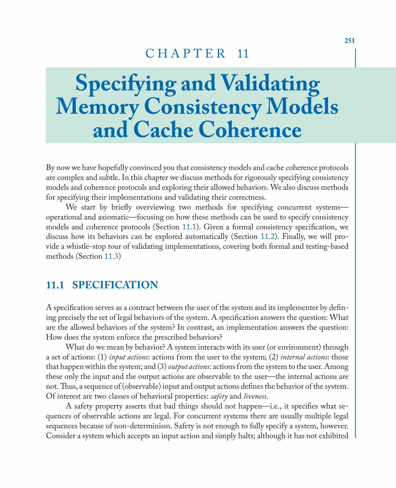
原书第 252 页PDF 274
ENGLISHanything bad, such a system is clearly not useful. That is why specifications also include liveness, which asserts that good things must eventually happen.
中文任何坏事，但显然毫无用处。因此，规约还必须包含活性，要求好事最终一定会发生。
ENGLISHBefore we explain how behaviors can be formally specified, let us consider what the observable actions are for consistency models and coherence protocols.
中文在介绍如何形式化描述行为之前，先看看内存一致性模型和缓存一致性协议中，哪些动作是可观察的。
ENGLISHConsistency models: Observable actions and behavior A memory consistency model is a contract between the software (user) and the hardware (implementer). Given a multithreaded program containing per-thread sequences of loads and stores, the memory model specifies what value each load must return. Thus, the relevant input actions are loads and stores (and their associated parameters including the processor core ID, address, and value to be stored in case of a store). The output actions are the values returned in response to the loads. A sequence of these observable actions (stores, loads, and the values returned) represents the behavior of a memory consistency model.
中文内存一致性模型：可观察动作与行为
内存一致性模型是软件（使用者）与硬件（实现者）之间的契约。给定一个多线程程序，每个线程都有加载和存储序列，模型规定各次加载应返回什么值。因此，相关输入动作是加载和存储及其参数，包括处理器核心ID、地址，以及存储操作要写入的值。输出动作是各加载所返回的值。由这些可观察动作——存储、加载和返回值——组成的序列，表示内存一致性模型的行为。
内存一致性模型是软件（使用者）与硬件（实现者）之间的契约。给定一个多线程程序，每个线程都有加载和存储序列，模型规定各次加载应返回什么值。因此，相关输入动作是加载和存储及其参数，包括处理器核心ID、地址，以及存储操作要写入的值。输出动作是各加载所返回的值。由这些可观察动作——存储、加载和返回值——组成的序列，表示内存一致性模型的行为。
ENGLISHCoherence protocols: Observable actions and behavior Recall that the processor core pipeline interacts with the coherence protocol to jointly enforce the desired memory consistency model. Thus, the “user” of the coherence protocol is the pipeline that interacts with it via two input actions: (1) read-request for every load in the program; and (2) write-request for every store in the program. The output actions from the coherence protocol are: (1) read-return that returns a value for every read-request; and (2) write-return that is simply an acknowledgment for the write. (The pipeline must know when a write completes.) A sequence of these observable actions represents the externally observable behavior of a coherence protocol.
中文缓存一致性协议：可观察动作与行为
处理器核心流水线与缓存一致性协议协同，实现目标内存一致性模型。因此，缓存一致性协议的“使用者”是流水线，二者通过两类输入动作交互：（1）对应程序中每次加载的read-request；（2）对应每次存储的write-request。协议的输出动作有：（1）为每个read-request返回值的read-return；（2）为写入返回确认的write-return，因为流水线必须知道写入何时完成。由这些可观察动作组成的序列，表示缓存一致性协议的外部可观察行为。
处理器核心流水线与缓存一致性协议协同，实现目标内存一致性模型。因此，缓存一致性协议的“使用者”是流水线，二者通过两类输入动作交互：（1）对应程序中每次加载的read-request；（2）对应每次存储的write-request。协议的输出动作有：（1）为每个read-request返回值的read-return；（2）为写入返回确认的write-return，因为流水线必须知道写入何时完成。由这些可观察动作组成的序列，表示缓存一致性协议的外部可观察行为。
ENGLISHIt is important to note here the difference between what is observable in a coherence protocol vs. a consistency model. In the former, the instant when a read-request or write-request returns is observable. However, for a consistency model, the instant when a load or store returns is not observable—only the values returned for loads are observable.
中文这里必须区分缓存一致性协议与内存一致性模型中可观察的内容。前者中，read-request或write-request返回的时刻是可观察的；后者中，加载或存储返回的时刻不可观察，只有加载返回的值可以观察。
ENGLISHNext, we discuss two major ways to specify the behavior of a system: operational and axiomatic. In the former, the system is described using an abstract reference implementation, whereas in the latter, mathematical axioms are used to describe the system’s behaviors.
中文下面讨论描述系统行为的两种主要方法：操作式与公理化。前者使用抽象参考实现描述系统，后者使用数学公理描述系统行为。
ENGLISH11.1.1 OPERATIONAL SPECIFICATION An operational specification describes the behavior of a system using a reference implementation, typically expressed in the form of a state machine. The behaviors—i.e., the sequence of input/output actions—exhibited by the reference implementation define the set of all legal behaviors of the system. Operational models typically use internal states and internal actions to constrain the behavior of the system, thereby ensuring safety. Liveness in operational models hinges on the fact that state changes must eventually happen. Typically, liveness is expressed externally (outside of the state machine specification) using mathematical axioms written in temporal logic [31].
中文11.1.1 操作式规约
操作式规约使用参考实现描述系统行为，通常以状态机形式表达。参考实现表现出的输入／输出动作序列，定义了系统的全部合法行为。操作式模型通常借助内部状态和内部动作约束系统行为，从而保证安全性。其活性取决于状态变化最终必须发生；通常在状态机规约之外，以时序逻辑[31]书写的数学公理表达活性。
操作式规约使用参考实现描述系统行为，通常以状态机形式表达。参考实现表现出的输入／输出动作序列，定义了系统的全部合法行为。操作式模型通常借助内部状态和内部动作约束系统行为，从而保证安全性。其活性取决于状态变化最终必须发生；通常在状态机规约之外，以时序逻辑[31]书写的数学公理表达活性。
查看 原书第 252 页 的完整原版面（PDF 274）
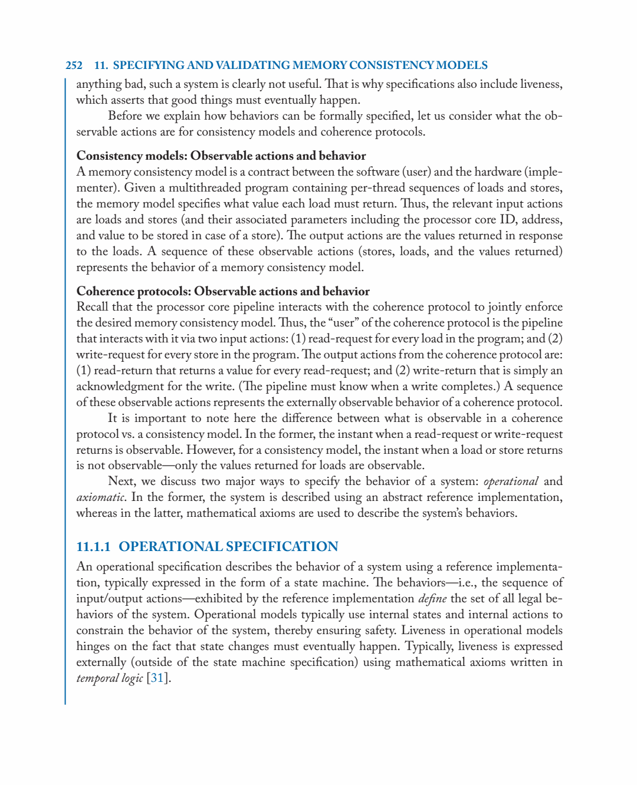
原书第 253 页PDF 275
ENGLISHSpecifying consistency models and coherence protocols operationally Consistency models can be specified operationally using abstract implementations. Like their realistic counterparts, the abstract implementations typically have both the processor core pipeline component and the memory system component. Recall that the memory system component, which has the same interface as that of the coherence protocol (i.e., the same set of observable actions: read-request, read-return, write-request, write-return), specifies the coherence protocol.
中文以内存一致性模型和缓存一致性协议为对象的操作式规约
可以通过抽象实现，以操作式方法描述内存一致性模型。与真实实现类似，抽象实现通常同时包含处理器核心流水线组件和存储系统组件。存储系统组件与缓存一致性协议具有相同接口，也就是相同的可观察动作集合：read-request、read-return、write-request、write-return，因此它描述的就是缓存一致性协议。
可以通过抽象实现，以操作式方法描述内存一致性模型。与真实实现类似，抽象实现通常同时包含处理器核心流水线组件和存储系统组件。存储系统组件与缓存一致性协议具有相同接口，也就是相同的可观察动作集合：read-request、read-return、write-request、write-return，因此它描述的就是缓存一致性协议。
ENGLISHIn the following, we will describe two operational models for sequential consistency (SC). Both models have identical pipeline components but differ in their memory system components—the former specifies a consistency-agnostic coherence protocol whereas the latter specifies a consistency-directed coherence protocol. This will allow us to operationally characterize the differences between the two.
中文下面给出两个顺序一致性（SC）操作式模型。二者的流水线组件完全相同，存储系统组件则不同：前者描述与内存一致性模型无关的缓存一致性协议，后者描述由内存一致性模型指导的协议。借此可以在操作式层面刻画两类协议的差异。
ENGLISHSC Operational Spec1: In-order pipeline + atomic memory An example of an operational SC specification is similar to the naive SC implementation described in Chapter 3.6 (the switch). In addition to the observable actions—stores, loads and the values returned—the model employs internal state (memory) to constrain the values that can be read by the loads.
中文SC操作式规约1：顺序流水线 + 原子存储器
一种SC操作式规约与3.6节介绍的朴素SC实现，即开关模型，类似。除了存储、加载及加载返回值这些可观察动作，模型还使用内部状态——存储器——约束加载能够读到的值。
一种SC操作式规约与3.6节介绍的朴素SC实现，即开关模型，类似。除了存储、加载及加载返回值这些可观察动作，模型还使用内部状态——存储器——约束加载能够读到的值。
ENGLISHThe operational specification works as follows. (It is assumed that each core has a program counter, pointing to the next instruction to be fetched.)
中文操作式规约如下。假设每个核心都有程序计数器，指向下一条待取指令。
ENGLISHStep 1: Fetch: One of the processor cores is non-deterministically selected; it fetches its next instruction and inserts it into a local instruction queue.
中文步骤1：取指。非确定性地选择一个处理器核心，取出它的下一条指令，并插入本地指令队列。
ENGLISHStep 2: Issue from the pipeline. Again one core is non-deterministically selected; it decodes the next instruction from its instruction queue. If it is a memory instruction, the pipeline issues a read-request (for a load) or a write-request (for a store) and blocks.
中文步骤2：从流水线发出。再次非确定性地选择一个核心，对指令队列中的下一条指令译码。若是访存指令，流水线为加载发出read-request，或为存储发出write-request，然后阻塞。
ENGLISHStep 3: Atomic memory system. Upon receiving a read-request, it reads the location from memory and responds with the value; upon receiving a write-request, the memory system writes it to memory and responds with an ack.
中文步骤3：原子存储系统。收到read-request时，从存储器读取目标位置并返回值；收到write-request时，将值写入存储器并返回确认。
ENGLISHStep 4: Return to the pipeline: The pipeline unblocks upon receiving a response: ack (in case of a store) or value (in case of a load).
中文步骤4：返回流水线。流水线收到响应后解除阻塞：存储收到确认，加载收到值。
ENGLISHThe behaviors produced by this specification are sequences of input actions in program order (load/store at Step 1) and output actions (value returned for a load at Step 4). It is easy to see that its behaviors satisfy SC. For example, in the message passing example in Table 11.1 the following sequence is observable:
中文这一规约产生的行为，是按程序顺序出现的输入动作——步骤1中的加载／存储——以及输出动作——步骤4中的加载返回值——所构成的序列。很容易看出这些行为满足SC。例如，表11.1中的消息传递示例可以观察到如下序列：
ENGLISH«S1, S2, L1:r1=SET, L2:r2=NEW»
中文«S1, S2, L1:r1=SET, L2:r2=NEW»
ENGLISHLikewise, several other sequences in which L1 repeats one or more time until it sees a value of SET are possible. But the following SC violation is not observable:
中文类似地，L1可以重复一次或多次，直到读到SET，因此还有其他多种可能序列。但下面这种违反SC的序列不可观察到：
查看 原书第 253 页 的完整原版面（PDF 275）
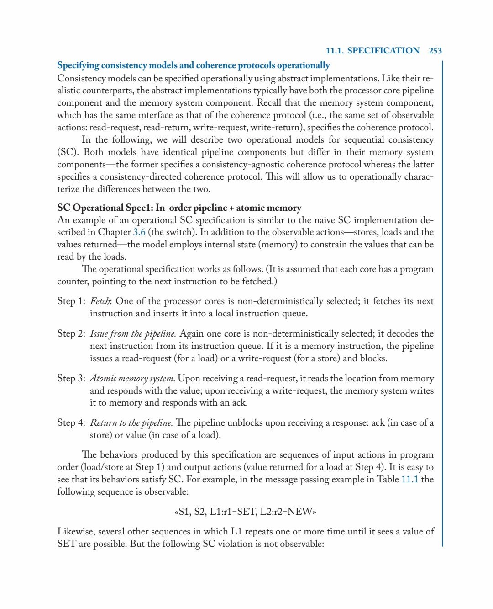
原书第 254 页PDF 276
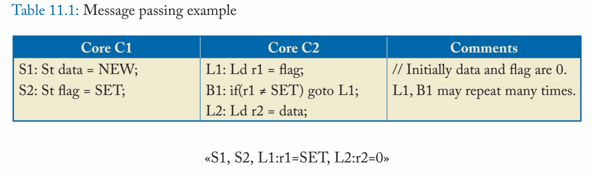
ENGLISHTable 11.1: Message passing example
中文表11.1：消息传递示例

中文核心C1 核心C2 注释
ENGLISH

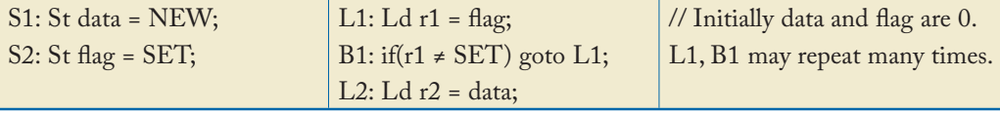
展开可搜索的英文文字
S1: St data = NEW; L1: Ld r1 = flag; // Initially data and fla g are 0. S2: St fl ag = SET; B1: if(r1 ≠ SET) goto L1; L1, B1 may repeat many times. L2: Ld r2 = data;中文S1: St data = NEW;｜L1: Ld r1 = flag;｜初始时data和flag均为0。
S2: St flag = SET;｜B1: if(r1 ≠ SET) goto L1;｜L1与B1可能重复多次。
｜L2: Ld r2 = data;
S2: St flag = SET;｜B1: if(r1 ≠ SET) goto L1;｜L1与B1可能重复多次。
｜L2: Ld r2 = data;
ENGLISH«S1, S2, L1:r1=SET, L2:r2=0»
中文«S1, S2, L1:r1=SET, L2:r2=0»
ENGLISHSC Operational Spec2: In-order pipeline + buffered memory Now let us consider another SC operational model in which the atomic memory is now frontended by a global FIFO store queue to form a buffered memory system. Each entry in the store queue contains the address, the value to be stored, and the ID of the core that issued the write request. The buffered memory system responds to a write request with two types of acks: an ack to denote that the request has been inserted into the write queue and another late-ack when the write has been written to memory. More specifically, the buffered memory system works as follows. (Steps 1 and 4 are identical to the previous spec and hence omitted.)
中文SC操作式规约2：顺序流水线 + 带缓冲的存储器
再考虑另一个SC操作式模型：在原子存储器前增加全局FIFO存储队列，构成带缓冲的存储系统。队列的每个条目包含地址、待存储值，以及发出写请求的核心ID。该系统对写请求返回两类确认：ack表示请求已插入写队列；另一个late-ack表示写入已经落到存储器中。具体工作方式如下。步骤1和步骤4与前一规约相同，因此省略。
再考虑另一个SC操作式模型：在原子存储器前增加全局FIFO存储队列，构成带缓冲的存储系统。队列的每个条目包含地址、待存储值，以及发出写请求的核心ID。该系统对写请求返回两类确认：ack表示请求已插入写队列；另一个late-ack表示写入已经落到存储器中。具体工作方式如下。步骤1和步骤4与前一规约相同，因此省略。
ENGLISHStep 2’: Issue from the pipeline. One core is non-deterministically selected; it decodes the next instruction from its instruction queue. If it is a store instruction, the pipeline issues a write-request and blocks; if it is a load instruction, the pipeline waits for the latest write to be late-acked, then issues a read-request and blocks.
中文步骤2′：从流水线发出。非确定性地选择一个核心，对指令队列中的下一条指令译码。若为存储，流水线发出write-request并阻塞；若为加载，流水线先等待最近一次写入收到late-ack，再发出read-request并阻塞。
ENGLISHStep 3’: Buffered memory system. Upon receiving a write-request, the buffered memory system inserts it into the global store queue and responds to the pipeline with an ack. (When the write eventually gets written to memory, a late-ack is sent to the processor core that initiated the write.) Upon receiving a read-request, the value is read from memory and returned to the pipeline.
中文步骤3′：带缓冲的存储系统。收到write-request时，将其插入全局存储队列，并向流水线返回ack。当写入最终写到存储器时，再向发起写入的核心发送late-ack。收到read-request时，从存储器读取值并返回流水线。
ENGLISHDespite the buffering, the behavior produced by the model satisfies SC. Returning to the example shown in Table 11.1:
中文尽管存在缓冲，该模型产生的行为仍满足SC。回到表11.1中的示例：
ENGLISH«S1, S2, L1:r1=SET, L2:r2=0»
中文«S1, S2, L1:r1=SET, L2:r2=0»
ENGLISHThe above SC violation is not observable because the global store queue is a FIFO and hence commits stores to memory without violating per-core program order.
中文上述违反SC的行为不可观察到，因为全局存储队列采用FIFO，向存储器提交存储时不会违反每个核心的程序顺序。
ENGLISHConsistency-agnostic vs. Consistency-directed coherence Recall that in Chapter 2 we classified coherence interfaces into two categories: consistencyagnostic and consistency-directed. The atomic memory system (Step 3 from Spec1) specifies a consistency-agnostic protocol since writes happen synchronously—whereas the buffered memory system (Step 3’) is one example of a consistency-directed protocol specification since writes
中文与内存一致性模型无关的缓存一致性，与由内存一致性模型指导的缓存一致性
第2章将缓存一致性接口分为这两类。原子存储系统，即规约1的步骤3，描述的是与内存一致性模型无关的协议，因为写入同步发生；带缓冲的存储系统，即步骤3′，则是由内存一致性模型指导的协议规约的一个例子，因为写入
第2章将缓存一致性接口分为这两类。原子存储系统，即规约1的步骤3，描述的是与内存一致性模型无关的协议，因为写入同步发生；带缓冲的存储系统，即步骤3′，则是由内存一致性模型指导的协议规约的一个例子，因为写入
查看 原书第 254 页 的完整原版面（PDF 276）
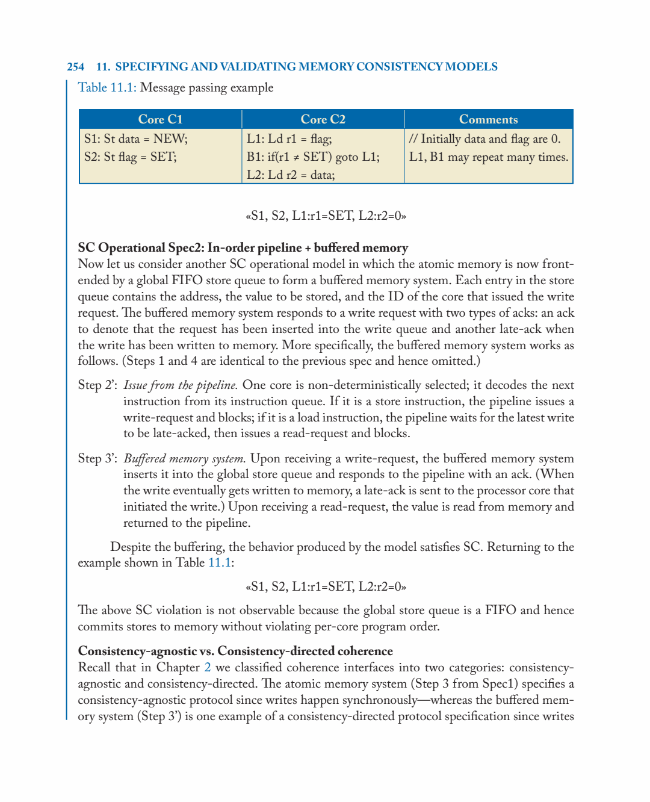
原书第 255 页PDF 277
ENGLISHare asynchronous. (More aggressive specifications of the latter are possible [3].) Although both of these specification combine with an in-order pipeline to enforce SC, the two protocols show different behaviors. Consider the sequence of externally observable actions shown in Table 11.2.
中文异步发生。后一类还可以采用更激进的规约[3]。虽然两个规约都能与顺序流水线结合实现SC，协议自身表现出的行为却不同。考虑表11.2所示的外部可观察动作序列。
ENGLISH«write-request(X,1), write-return(X,1),read-request(X), read-return(X,0)»
中文«write-request(X,1), write-return(X,1), read-request(X), read-return(X,0)»
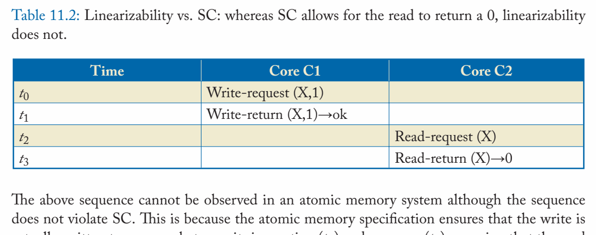
ENGLISHTable 11.2: Linearizability vs. SC: whereas SC allows for the read to return a 0, linearizability
中文表11.2：可线性化性与SC。SC允许读取返回0，而可线性化性
ENGLISHdoes not.
中文不允许。
ENGLISH

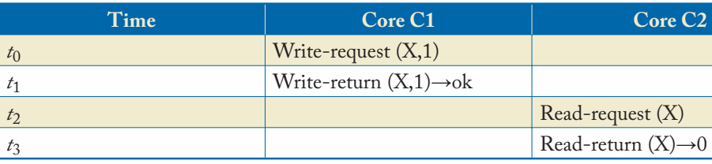
展开可搜索的英文文字
Time Core C1 Core C2 t Write-request (X,1) 0 t Write-return (X,1)→ok 1 t Read-request (X) 2 t Read-return (X)→0 3中文时间｜核心C1｜核心C2
t₀｜Write-request(X,1)｜
t₁｜Write-return(X,1)→ok｜
t₂｜｜Read-request(X)
t₃｜｜Read-return(X)→0
t₀｜Write-request(X,1)｜
t₁｜Write-return(X,1)→ok｜
t₂｜｜Read-request(X)
t₃｜｜Read-return(X)→0
ENGLISHThe above sequence cannot be observed in an atomic memory system although the sequence does not violate SC. This is because the atomic memory specification ensures that the write is actually written to memory between its invocation (t ) and response (t ), ensuring that the read 0 1 will return a 1 and not a 0. However, the buffered memory specification allows this behavior because the write to X can be buffered in the global queue when the read happens, allowing the read to see a 0.

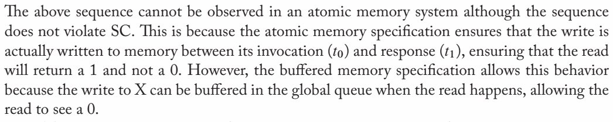
数学符号与上下标以此原版面为准中文虽然上述序列不违反SC，但在原子存储系统中无法观察到。原子存储器规约保证，写入在调用t₀与响应t₁之间确实写入存储器，因此后续读取必然返回1而非0。但带缓冲的存储器规约允许这一行为，因为读取发生时，对X的写入可能仍缓存在全局队列中，使读取看到0。
ENGLISHThe atomic memory system (or consistency-agnostic coherence) can be modeled using a correctness condition that is stronger than SC called linearizability [16]. In addition to the SC rules, linearizability requires that a write must take effect in real time between its invocation and response. Linearizability is a composable property: an object is linearizable iff its components are linearizable. Translating to our setting, a memory system is linearizable iff each of its locations are individually linearizable. Thus, consistency-agnostic coherence can be specified on a per-memory location basis, i.e., per-memory location linearizability. This also explains why coherence of individual locations can be enforced independently using, for example, distributed directories.
中文原子存储系统，或与内存一致性模型无关的缓存一致性，可以用比SC更强的正确性条件——可线性化性（linearizability）[16]——建模。除SC规则外，可线性化性还要求写入必须在其调用与响应之间的真实时间内生效。可线性化性是一种可组合性质：一个对象可线性化，当且仅当其组成部分都可线性化。对应到这里，存储系统可线性化，当且仅当其中每个存储位置都分别可线性化。因此，与内存一致性模型无关的缓存一致性可以逐存储位置描述，即每个位置都满足可线性化性。这也解释了为何可以利用分布式目录等机制，独立维护各位置的缓存一致性。
ENGLISHIn contrast, SC is not a composable property. Even if all memory locations satisfy SC independently (and the pipeline does not reorder memory operations), it does not imply that the whole system is SC. Recall that in Chapter 2 (sidebar) we looked at consistency-like definitions of coherence, where coherence was defined as SC on a per-memory location basis. Such a definition of coherence, however, does not completely specify a coherence protocol. (Because linearizability is stronger than SC, per-location SC is not strong enough to specify consistencyagnostic coherence. Because SC is not compositional, per-location SC is not strong enough to specify consistency-directed coherence as well.) Nevertheless, per-memory location SC is a useful safety check for coherence. Any consistency-agnostic protocol—recall that it satisfies
中文相比之下，SC不是可组合性质。即使所有存储位置分别满足SC，且流水线不重排访存操作，也不能推出整个系统满足SC。第2章旁注讨论过类似内存一致性的缓存一致性定义，即把缓存一致性定义为逐存储位置的SC。但这一条件无法完整描述缓存一致性协议：可线性化性强于SC，因此逐位置SC不足以描述与内存一致性模型无关的协议；而SC不可组合，因此它也不足以描述由内存一致性模型指导的协议。尽管如此，逐位置SC仍是有用的缓存一致性安全性检查。任何与内存一致性模型无关的协议都满足
查看 原书第 255 页 的完整原版面（PDF 277）
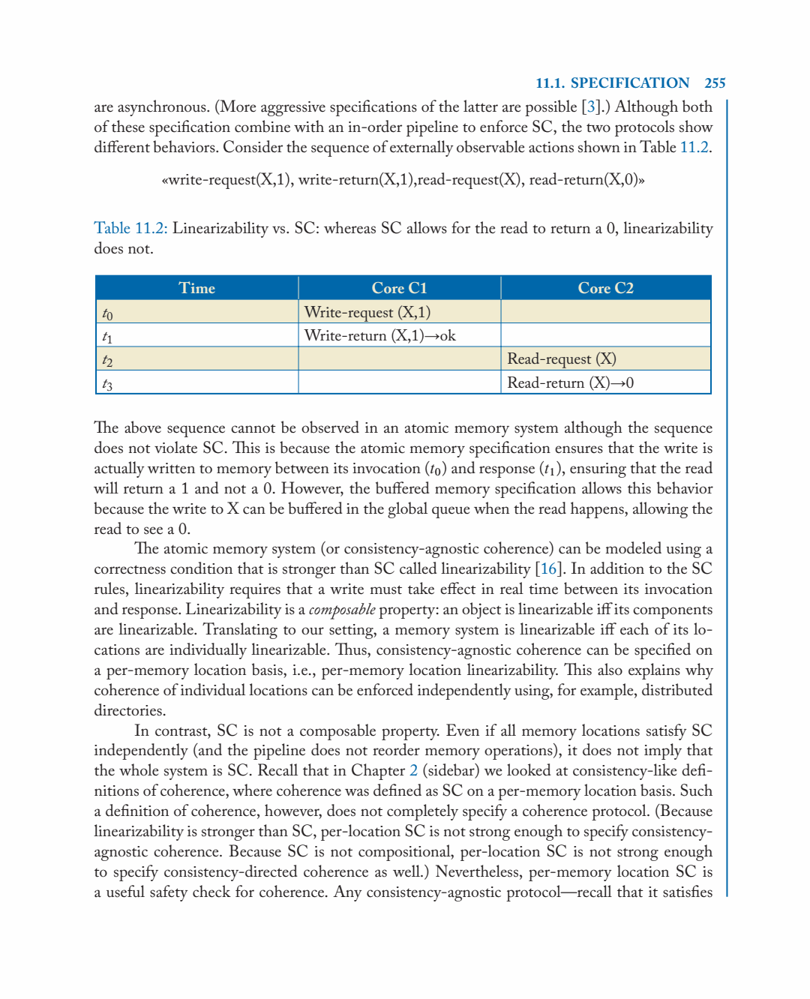
原书第 256 页PDF 278
ENGLISHper-memory location linearizability—will necessarily satisfy per-memory location SC . Even for a consistency-directed coherence protocol, per-location SC is a useful safety check since most consistency models explicitly mandate SC on a per-location basis (and call it the “coherence” axiom! [4]).
中文逐位置可线性化性，因此必然满足逐位置SC。对于由内存一致性模型指导的协议，逐位置SC也是有用的安全性检查，因为大多数内存一致性模型都显式要求逐位置SC，并将其称为“缓存一致性”公理[4]！
ENGLISHIn summary, whereas consistency-agnostic coherence exposes an atomic (linearizable) memory interface, consistency-directed coherence exposes an interface of the target consistency model.
中文综上，与内存一致性模型无关的缓存一致性暴露原子的、可线性化的存储器接口；由内存一致性模型指导的缓存一致性则暴露目标内存一致性模型的接口。
ENGLISHSpecifying implementations operationally Until now, we saw how consistency models and coherence protocols can be specified operationally. One of the benefits of the operational method is that lower level implementations (e.g., detailed coherence protocols) can be modeled naturally by refining the base specification with implementation-specific internal states and actions.
中文实现的操作式规约
前面说明了如何以操作式方法描述内存一致性模型和缓存一致性协议。操作式方法的一个优点是：可以在基础规约中增加实现特定的内部状态和动作，通过精化，自然地建立更低层实现的模型，例如详细的缓存一致性协议。
前面说明了如何以操作式方法描述内存一致性模型和缓存一致性协议。操作式方法的一个优点是：可以在基础规约中增加实现特定的内部状态和动作，通过精化，自然地建立更低层实现的模型，例如详细的缓存一致性协议。
ENGLISHFor example, let us add caches to the SC operational specification (Spec1) described above, with each processor now holding a local cache and its associated coherence controller. Each read/write request from the pipeline is now sent first to the local cache controller that checks for a hit or a miss. If it is a miss, the cache controller contacts the directory/memory controller with a GetS or GetM request (as we saw in the earlier chapters on coherence protocols). The exact state transitions naturally depend on the specifics of the coherence protocol employed, but the takeaway here is that the coherence protocols discussed earlier in table format are essentially operational models obtained by refining the memory system (Step 3 or Step 3’). In a similar vein, it is possible to refine the pipeline specification to model additional pipeline stages to faithfully model the pipeline implementation.
中文例如，在前述SC操作式规约1中加入缓存，让每个处理器具有本地缓存及对应一致性控制器。流水线的每个读写请求先发送给本地缓存控制器，由后者检查命中或未命中。发生未命中时，控制器通过GetS或GetM联系目录／存储器控制器，正如前面缓存一致性章节所介绍的。具体状态转换自然取决于所采用的协议，但关键在于：前面用表格呈现的协议，本质上就是通过精化存储系统——步骤3或步骤3′——获得的操作式模型。同样，也可通过细化流水线规约，加入更多流水级，忠实建模流水线实现。
ENGLISHTool support Operational models can be directly expressed in any language for expressing state machines such as Murphi (http://mclab.di.uniroma1.it/site/index.php/software/18-cmurphi) or TLA (https://lamport.azurewebsites.net/tla/tla.html). In particular, each of the coherence protocol tables in the book are easily expressed as state machines.
中文工具支持
操作式模型可以直接用任何能表达状态机的语言书写，例如Murphi（http://mclab.di.uniroma1.it/site/index.php/software/18-cmurphi）或TLA（https://lamport.azurewebsites.net/tla/tla.html）。尤其是，本书中的每张缓存一致性协议表都很容易表达为状态机。
操作式模型可以直接用任何能表达状态机的语言书写，例如Murphi（http://mclab.di.uniroma1.it/site/index.php/software/18-cmurphi）或TLA（https://lamport.azurewebsites.net/tla/tla.html）。尤其是，本书中的每张缓存一致性协议表都很容易表达为状态机。
ENGLISH11.1.2 AXIOMATIC SPECIFICATION Axiomatic specification is a more abstract way of specifying the behavior of a concurrent system, whereby mathematical axioms composed of observable actions (and relations between these actions) are used to constrain the set of allowed behaviors.
中文11.1.2 公理化规约
公理化规约是一种更抽象的并发系统行为描述方式。它用可观察动作及动作间关系构成的数学公理，约束允许的行为集合。
公理化规约是一种更抽象的并发系统行为描述方式。它用可观察动作及动作间关系构成的数学公理，约束允许的行为集合。
ENGLISHSpecifying consistency models axiomatically The formalism we used to describe the SC, TSO, and XC memory models in the earlier chapters corresponds to the axiomatic method. Recall that the formalism is composed of the following components.
中文内存一致性模型的公理化规约
前面各章描述SC、TSO和XC内存模型时采用的形式化方法，就属于公理化方法。回顾一下，它由以下部分构成。
前面各章描述SC、TSO和XC内存模型时采用的形式化方法，就属于公理化方法。回顾一下，它由以下部分构成。
查看 原书第 256 页 的完整原版面（PDF 278）
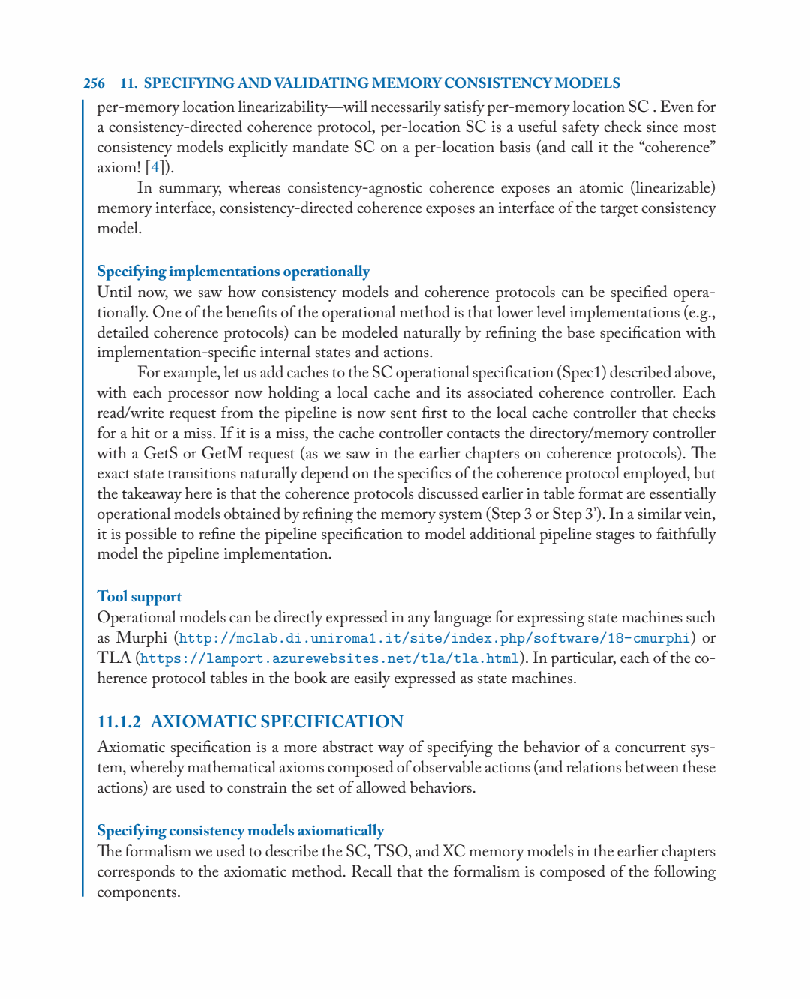
原书第 257 页PDF 279
ENGLISH• Observable actions: These are the loads, stores and the values returned for the loads.
中文• 可观察动作：加载、存储及加载返回的值。
ENGLISH• Relations: The program order relation is defined as the per-core total order representing the order in which loads and stores appear in each core. The global memory order is defined as a total order on the memory operations from all cores.
中文• 关系：程序顺序是每个核心各自的全序，表示该核心中加载和存储出现的顺序。全局内存顺序则是所有核心访存操作之上的全序。
ENGLISH• Axioms: There are two categories of axioms—safety and liveness—that specify the safety and liveness properties, respectively. For SC there are three safety axioms: (1) preserved program order axiom—the global memory order respects program order of each core; (2) load value axiom—the load gets the value written by the most recent store before it in global memory order; and (3) the atomicity axiom—the load and store of an RMW instruction occur consecutively in global memory order. In addition to these safety axioms, there is also a liveness axiom that states that no memory operations must be preceded by an infinite sequence of other memory operations; informally, this means that a memory operation must eventually perform and cannot be delayed indefinitely. For any sequence of observable actions—if we are able to construct a global memory order that adheres to the above axioms, then it said to be a legal behavior of the memory model.
中文• 公理：分为安全性公理与活性公理，分别描述相应性质。SC有三条安全性公理：（1）保留程序顺序公理——全局内存顺序尊重各核心的程序顺序；（2）加载值公理——加载取得全局内存顺序中位于其前的最近一次同地址存储所写的值；（3）原子性公理——读—改—写（RMW）指令的加载与存储在全局内存顺序中连续出现。此外，还有一条活性公理：任何访存操作之前都不能存在无限长的其他访存操作序列。非正式地说，访存操作最终必须执行，不能无限推迟。对于任意可观察动作序列，只要能够构造满足上述公理的全局内存顺序，该序列就是内存模型的合法行为。
ENGLISHSpecifying coherence protocols axiomatically We saw earlier how coherence protocols can be specified operationally. Here, we see how they can be specified at a more abstract level axiomatically, which can be useful for verification purposes. Specifically, we focus on specifying a consistency-agnostic coherence protocol that satisfies linearizability. (Consistency-directed coherence protocols can be specified similarly to how consistency models are specified axiomatically.) Recall that linearizability is stronger than SC, e.g., it disallows the sequence of actions shown in Table 11.2. Therefore, the specification adds an additional axiom over and above SC to constrain such behavior.
中文缓存一致性协议的公理化规约
前面介绍了操作式规约，这里考察如何在更抽象的层面公理化描述协议，以便开展验证。具体聚焦于满足可线性化性、与内存一致性模型无关的缓存一致性协议。由内存一致性模型指导的协议，则可以用类似内存一致性模型的公理化方法描述。可线性化性比SC更强，例如它不允许表11.2中的动作序列。因此，规约在SC之上增加一条公理，约束这种行为。
前面介绍了操作式规约，这里考察如何在更抽象的层面公理化描述协议，以便开展验证。具体聚焦于满足可线性化性、与内存一致性模型无关的缓存一致性协议。由内存一致性模型指导的协议，则可以用类似内存一致性模型的公理化方法描述。可线性化性比SC更强，例如它不允许表11.2中的动作序列。因此，规约在SC之上增加一条公理，约束这种行为。
ENGLISH• Observable actions: Because we are specifying a coherence protocol, the relevant actions are the read-request, read-return, write-request, and write-return events (the coherence protocol interface as seen by the processor pipeline).
中文• 可观察动作：由于描述的是缓存一致性协议，相关动作是read-request、read-return、write-request和write-return事件，即处理器流水线看到的协议接口。
ENGLISH• Internal action: In addition to the observable actions, we add two internal actions—readperform and write-perform—the instants in which a read or a write takes effect.
中文• 内部动作：除可观察动作外，增加read-perform和write-perform两种内部动作，分别表示读取或写入生效的瞬间。
ENGLISH• Relations: Like SC, the global memory order is defined to be a total order on the readperform and write-perform events from all cores.
中文• 关系：与SC类似，全局内存顺序定义为所有核心read-perform和write-perform事件之上的全序。
ENGLISH• Axioms: In addition to the three safety axioms that are associated with SC there is a fourth axiom that says that a read or write must perform between its invocation and response; more formally, a write-perform (read-perform) action must appear in between the writerequest (read-request) and write-return (read-return) actions in the global memory order. Finally, like in SC there is a liveness axiom that says that any read or write request must eventually return.
中文• 公理：除SC的三条安全性公理外，增加第四条：读写操作必须在调用与响应之间执行。更形式化地说，在全局内存顺序中，write-perform（read-perform）必须位于write-request（read-request）和write-return（read-return）之间。最后，与SC一样，还需活性公理，规定任何读写请求最终都必须返回。
查看 原书第 257 页 的完整原版面（PDF 279）
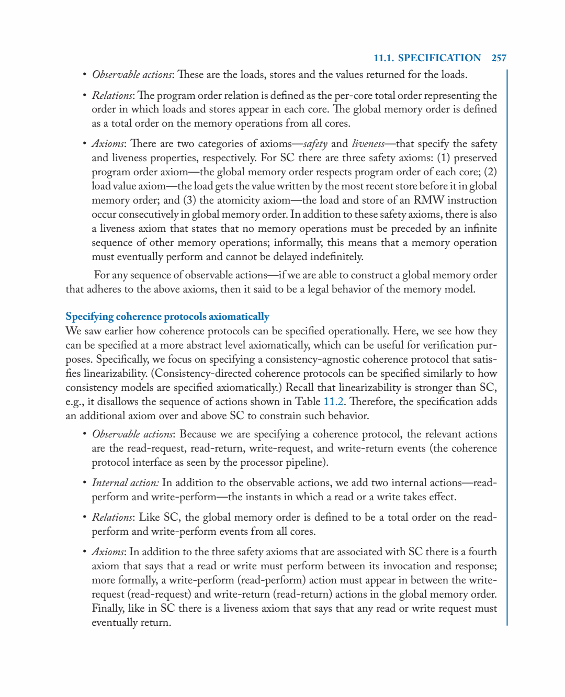
原书第 258 页PDF 280
ENGLISHSpecifying implementations axiomatically We saw earlier how implementations (e.g., coherence protocol implementations) can be naturally expressed operationally by extending the base operational specification with internal states and actions. In a similar vein, implementations can also be expressed axiomatically by extending the base axiomatic specification. In this section, we focus on how a processor core pipeline can be specified axiomatically following Lustig et al. [20].
中文实现的公理化规约
前面看到，可以通过为基础操作式规约增加内部状态和动作，自然地表达缓存一致性协议等实现。同样，也可通过扩展基础公理化规约描述实现。本节依据Lustig等人[20]的方法，重点介绍处理器核心流水线的公理化描述。
前面看到，可以通过为基础操作式规约增加内部状态和动作，自然地表达缓存一致性协议等实现。同样，也可通过扩展基础公理化规约描述实现。本节依据Lustig等人[20]的方法，重点介绍处理器核心流水线的公理化描述。
ENGLISHRecall the abstract nature of the axiomatic specification, where a load/store is modeled as a single instantaneous action. Our goal now is different though. It is not to specify correctness— rather, the goal is to faithfully model a realistic processor core in which each load or store goes through several pipeline stages. Therefore, a single load or store action is now expanded into multiple internal pipeline sub-actions with each sub-action representing a pipeline stage.
中文公理化规约具有抽象性，通常将一次加载或存储建模为单个瞬时动作。但现在的目标不同：我们并非定义正确性，而是忠实建模真实处理器核心，其中每次加载或存储都要经过若干流水级。因此，要把一个加载或存储动作展开为多个内部流水线子动作，每个子动作对应一个流水级。
ENGLISHFor example, let us consider the classic five-stage pipeline. Here, a load is split into five sub-actions: fetch, decode, execute, memory, and writeback. A store is split into seven actions: fetch, decode, execute, memory, writeback, exit-store-buffer and memory-write. (“Memory” refers to the memory stage in the pipeline, whereas “memory-write” refers to the sub-action in which the value is actually written to memory.)
中文例如，考虑经典五级流水线。加载被拆分为五个子动作：fetch、decode、execute、memory和writeback，即取指、译码、执行、访存和写回。存储被拆分为七个动作：上述五个，再加exit-store-buffer和memory-write，即离开存储缓冲区和写入存储器。其中memory指流水线的访存级，memory-write则指真正将值写入存储器的子动作。
ENGLISHRecall that a key component of the axiomatic consistency specification is the preserved program order (ppo) axiom, that mandates that program order must be preserved in the global memory order. Analogous to ppo, the idea is to use pipeline ordering axioms for specifying microarchitectural happens-before—i.e., specifying whether or not the pipeline preserves the ordering between sub-actions of different instructions. Again, it is important to understand the subtle difference between ppo and the pipeline ordering axioms. Whereas the goal of the former is to specify correctness, the goal with the latter is to faithfully model the pipeline. In fact, whether or not the pipeline implementation honors the ppo axioms (for the intended consistency model) is an important validation question, which we address in the next section.
中文公理化内存一致性规约的关键组成部分之一，是保留程序顺序（ppo）公理，它要求全局内存顺序保留规定的程序顺序。类似地，这里用流水线排序公理描述微体系结构层面的先发生于关系，即流水线是否保留不同指令子动作之间的顺序。必须理解二者的细微区别：ppo用于定义正确性，流水线排序公理则用于忠实建模流水线。实际上，流水线实现是否遵守目标内存一致性模型的ppo公理，正是下一节要讨论的重要验证问题。
ENGLISHFor the five-stage pipeline the pipeline ordering axioms are as follows.
中文对于五级流水线，排序公理如下。
ENGLISH• Fetch honors program order. If instruction i occurs before i in program order (po), then 1 2 po the fetch of i happens before i . That is: i i i :fetch i 2:fetch 1 2 1 2 1 (cid:0)! H) !

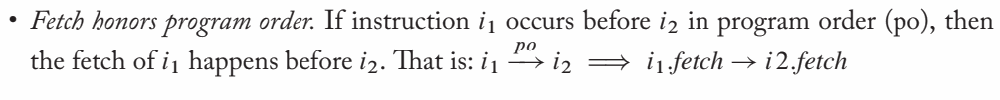
数学符号与上下标以此原版面为准中文• 取指尊重程序顺序。如果指令i₁在程序顺序po中位于i₂之前，那么i₁的取指先于i₂的取指。即：i₁ →po i₂ ⇒ i₁:fetch → i₂:fetch。
ENGLISH• Decode is in order. If fetch of i happens before i , then decode of i happens before i . 1 2 1 2 That is: i :fetch i 2:fetch i :decode i 2:decode 1 1 ! H) !

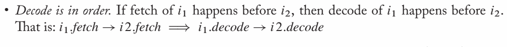
数学符号与上下标以此原版面为准中文• 译码按序进行。如果i₁的取指先于i₂，那么i₁的译码也先于i₂。即：i₁:fetch → i₂:fetch ⇒ i₁:decode → i₂:decode。
ENGLISH• In a similar vein, execute, memory and writeback stages preserve ordering (elided).
中文• 类似地，执行、访存和写回级也保留顺序，此处省略。
ENGLISH• FIFO store buffer. If writeback of store i happens before that of store i , then i exits the 1 2 1 store buffer before i . That is: i :writeback i 2:writeback i :exits-store-buffer 2 1 1 ! H) ! i 2:exits-store-buffer

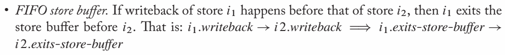
数学符号与上下标以此原版面为准中文• FIFO存储缓冲区。如果存储i₁的写回先于存储i₂，那么i₁先于i₂离开存储缓冲区。即：i₁:writeback → i₂:writeback ⇒ i₁:exits-store-buffer → i₂:exits-store-buffer。
ENGLISH• Ordered writes. If i exits the store buffer before i , then i writes to memory 1 2 1 before i . That is: i :exits-store-buffer i 2:exits-store-buffer i :memory-write 2 1 1 ! H) ! i :memory-write. 2

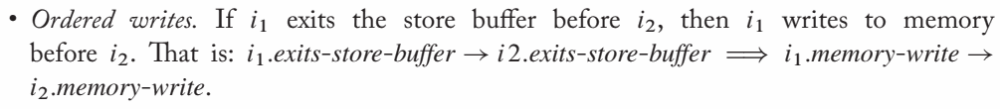
数学符号与上下标以此原版面为准中文• 有序写入。如果i₁先于i₂离开存储缓冲区，那么i₁先于i₂写入存储器。即：i₁:exits-store-buffer → i₂:exits-store-buffer ⇒ i₁:memory-write → i₂:memory-write。
查看 原书第 258 页 的完整原版面（PDF 280）
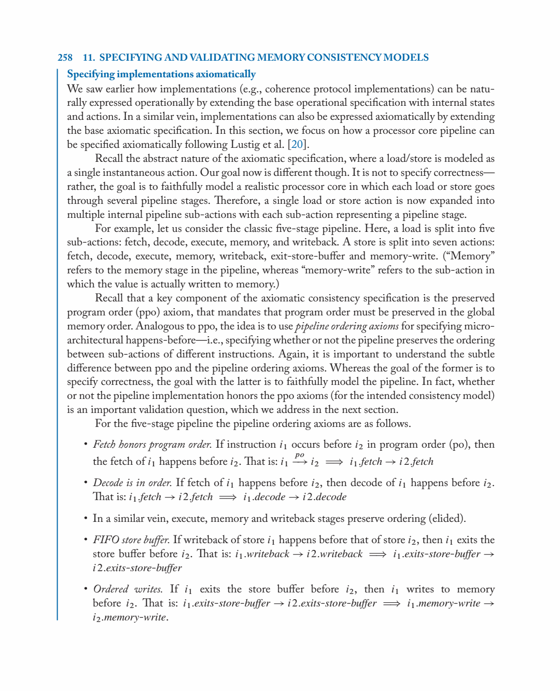
原书第 259 页PDF 281
ENGLISHFinally, the load value axiom specifies the constraints under which a load can read the value from a store of the same address.
中文最后，加载值公理规定了加载能够读取同地址某次存储所写值的条件。
ENGLISH• Load value axiom. If a store i writes to memory before load i ’s memory stage (and there 1 2 are no other memorywrites in the middle from other stores), then i reads the value written 2 by i . 1

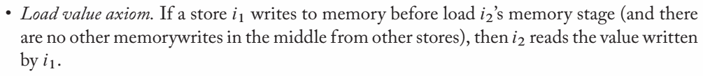
数学符号与上下标以此原版面为准中文• 加载值公理。如果存储i₁在加载i₂的访存级之前写入存储器，且中间没有其他存储对该地址执行memory-write，那么i₂读取i₁所写的值。
ENGLISHAny sequence of pipeline actions (and load values returned) that adhere to the above axioms are legal behaviors. In order to understand this better, consider the message passing example shown in Table 11.3. When L1 sees the new value SET, can L2 see the old value 0? The five-stage pipeline would permit this behavior if a global sequence of pipeline actions can be constructed that satisfies the axioms above. If not—i.e., if the constraints lead to a cycle, the behavior is not permitted. Let us attempt to construct a global sequence.
中文任何满足上述公理的流水线动作序列及加载返回值，都是合法行为。为进一步理解，考虑表11.3中的消息传递示例。L1读到新值SET时，L2能否读到旧值0？如果能构造满足上述公理的全局流水线动作序列，五级流水线就允许这一行为；否则，若约束形成环，就不允许。下面尝试构造这一序列。
ENGLISH• S1:memory-write S 2:memory-write (the pipeline ordering axioms ensure that S1 writes ! to memory before S2).

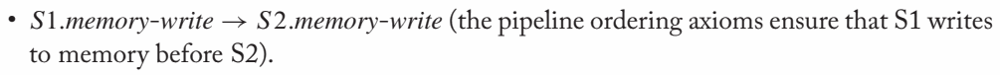
数学符号与上下标以此原版面为准中文• S1:memory-write → S2:memory-write。流水线排序公理保证S1先于S2写入存储器。
ENGLISH• S 2:memory-write L1:memory (S2 has to be written to memory before L1’s memory ! stage—only then, will L1 be able to read from S2).

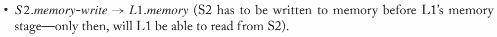
数学符号与上下标以此原版面为准中文• S2:memory-write → L1:memory。S2必须在L1的访存级之前写入存储器，L1才能读到S2的值。
ENGLISH• L1:memory L2:memory (the pipeline ordering axioms ensure that L1 performs its ! memory stage before L2).

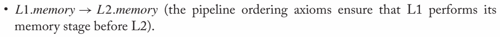
数学符号与上下标以此原版面为准中文• L1:memory → L2:memory。流水线排序公理保证L1先于L2执行访存级。
ENGLISH• L2:memory S1:memory-write (if L2 must read the old value, and not the one produced ! by S1, its memory stage must have happened before S1’s memory write).

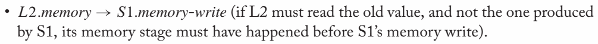
数学符号与上下标以此原版面为准中文• L2:memory → S1:memory-write。若L2必须读取旧值而非S1产生的值，其访存级就必须先于S1写入存储器。
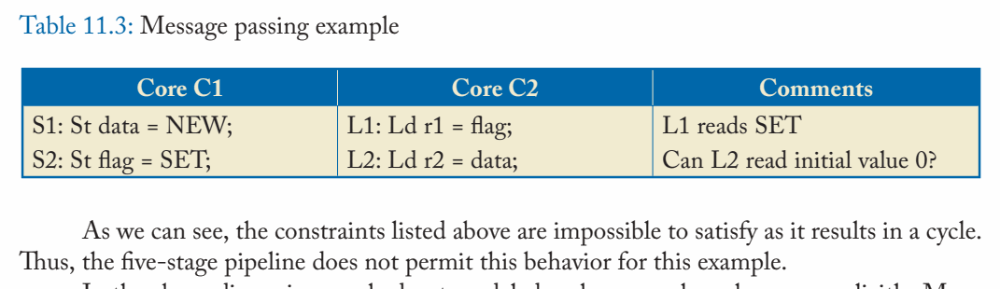
ENGLISHTable 11.3: Message passing example
中文表11.3：消息传递示例

中文核心C1 核心C2 注释
ENGLISH

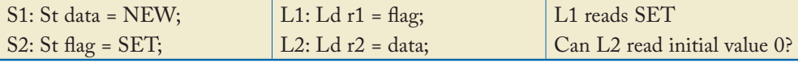
展开可搜索的英文文字
S1: St data = NEW; L1: Ld r1 = flag; L1 reads SET S2: St fl ag = SET; L2: Ld r2 = data; Can L2 read initial value 0?中文S1: St data = NEW;｜L1: Ld r1 = flag;｜L1读到SET。
S2: St flag = SET;｜L2: Ld r2 = data;｜L2能否读到初始值0？
S2: St flag = SET;｜L2: Ld r2 = data;｜L2能否读到初始值0？
ENGLISHAs we can see, the constraints listed above are impossible to satisfy as it results in a cycle. Thus, the five-stage pipeline does not permit this behavior for this example.
中文这些约束形成环，因此不可能同时满足。所以，该五级流水线不允许本例中的这种行为。
ENGLISHIn the above discussion, we had not modeled caches or cache coherence explicitly. Manerkar et al. [24] show how the axiomatic specification of the pipeline can be extended to model the coherence protocol/pipeline interactions.
中文上述讨论没有显式建模缓存或缓存一致性。Manerkar等人[24]说明了如何扩展流水线公理化规约，建模缓存一致性协议与流水线之间的交互。
ENGLISHIn summary, we saw how pipeline implementations can be specified axiomatically. The primary benefit of modeling implementations is so that they can be validated. In Section 11.3.1 we will see how axiomatic models of the implementation can be validated against its consistency specifications.
中文综上，流水线实现也能进行公理化描述。建模实现的主要目的，是验证实现。11.3.1节将介绍如何依据内存一致性规约，验证实现的公理化模型。
查看 原书第 259 页 的完整原版面（PDF 281）
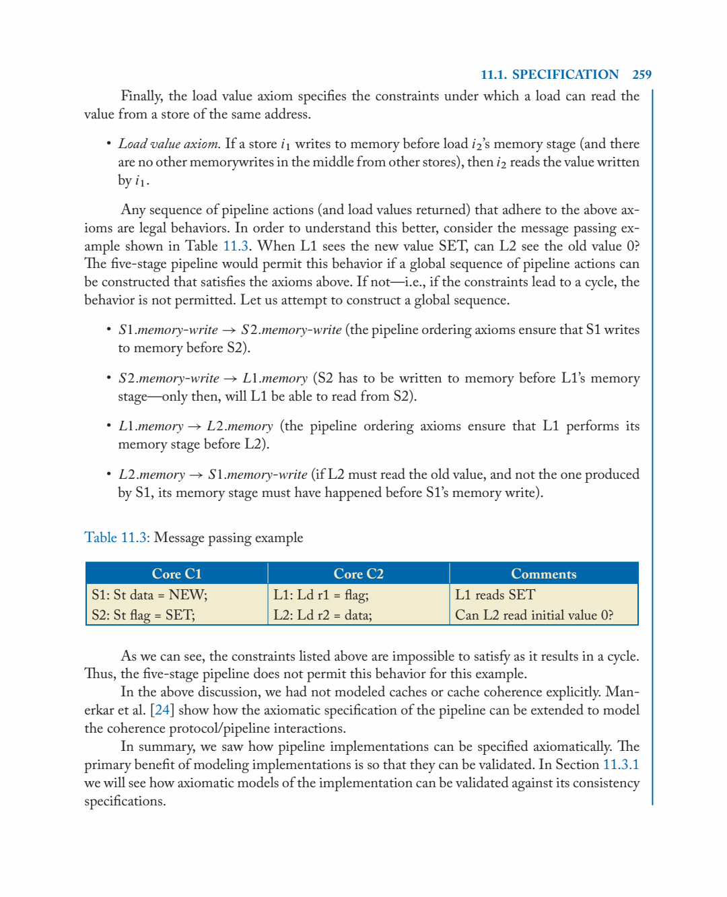
原书第 260 页PDF 282
ENGLISHTool support. Specification languages such as Alloy (http://alloy.mit.edu) or Cat, associated with the Herd tool (http://diy.inria.fr/herd/), can be used to express axiomatic specifications of consistency models. The (cid:22)spec domain specific language allows for pipeline and coherence protocol implementations to be specified axiomatically (http://check.cs.princeton.edu/#tools).

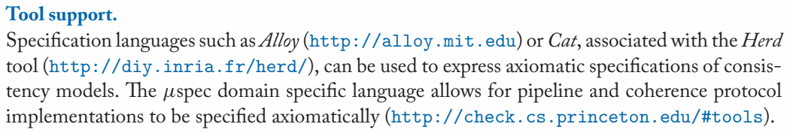
数学符号与上下标以此原版面为准中文工具支持。Alloy（http://alloy.mit.edu）或Herd工具配套的Cat语言（http://diy.inria.fr/herd/），都能表达内存一致性模型的公理化规约。领域专用语言μspec则允许公理化描述流水线和缓存一致性协议的实现（http://check.cs.princeton.edu/#tools）。
ENGLISH11.2 EXPLORING THE BEHAVIOR OF MEMORY CONSISTENCY MODELS
中文11.2 探索内存一致性模型的行为
ENGLISHBecause consistency models define shared memory behavior, it is crucial for programmers and middleware writers—e.g., compiler writers and kernel developers—to be able to understand what behaviors are permitted by the memory model and what behaviors are not. Typically, memory consistency models are specified by processor vendors in prose, which can often be ambiguous [1]. A formally specified memory consistency model is not only unambiguous, but also enables behaviors to be explored automatically. But before delving into how this exploration can be carried out, let us briefly discuss litmus tests—simple programs that reveal the properties of a memory model.
中文内存一致性模型定义共享内存行为，因此程序员以及编译器、内核等中间层软件的开发者，必须理解模型允许哪些行为、不允许哪些行为。处理器厂商通常用自然语言描述内存一致性模型，而自然语言往往可能存在歧义[1]。形式化规约不仅消除歧义，还能支持自动探索行为。在介绍如何探索之前，先简要讨论试金石测试，即揭示内存模型性质的简单程序。
ENGLISH11.2.1 LITMUS TESTS A memory consistency model is likely not very relevant to a high-level programmer who uses libraries for synchronization. It is, however, important for low-level programmers who develop synchronization constructs—be it a compiler writer who implements language level synchronization or a kernel writer who develops kernel level synchronization or an application programmer who develops lock-free data structures. Such low-level programmers will want to know the behaviors exhibited by the memory model so that they can get the desired behavior for their hand-crafted synchronization situation. Litmus tests are simple multithreaded code sequences that abstract synchronization situations; the behavior(s) exhibited by the memory model in these tests are thus instructive to the low-level programmer. For instance, they may reveal whether or not a particular FENCE is required to get the desired behavior. These litmus tests are also used in processor vendor manuals to explain the properties of the memory consistency model.
中文11.2.1 试金石测试
对于使用库完成同步的高层程序员，内存一致性模型可能并不十分相关；但对于开发同步构件的底层程序员，它至关重要。这包括实现语言层同步的编译器开发者、实现内核同步的内核开发者，以及开发无锁数据结构的应用程序员。他们需要了解内存模型表现出的行为，才能让手工设计的同步代码达到预期效果。试金石测试是对同步场景进行抽象的简单多线程代码序列；模型在这些测试中表现出的行为，因而能为底层程序员提供指导。例如，测试可能揭示是否必须使用某条FENCE才能获得期望行为。处理器厂商手册也用这些测试解释内存一致性模型的性质。
对于使用库完成同步的高层程序员，内存一致性模型可能并不十分相关；但对于开发同步构件的底层程序员，它至关重要。这包括实现语言层同步的编译器开发者、实现内核同步的内核开发者，以及开发无锁数据结构的应用程序员。他们需要了解内存模型表现出的行为，才能让手工设计的同步代码达到预期效果。试金石测试是对同步场景进行抽象的简单多线程代码序列；模型在这些测试中表现出的行为，因而能为底层程序员提供指导。例如，测试可能揭示是否必须使用某条FENCE才能获得期望行为。处理器厂商手册也用这些测试解释内存一致性模型的性质。
ENGLISHExamples. Recall that we used such litmus tests to explain the behavior of memory models in an earlier chapter. Table 3.3 for instance is dubbed Dekker’s litmus test since it abstracts the synchronization situation in Dekker’s algorithm for mutual exclusion; Table 3.1 is often referred to as the message passing test. Consider another example shown in Table 11.4 which is referred to as the “coherence” litmus test. An execution that results in r1 reading the NEW value but r2 reading the old value of 0 violates the data-value invariant and hence violates the coherence litmus test.
中文示例。前面章节已经用过这类测试解释内存模型行为。例如，表3.3称为Dekker试金石测试，因为它抽象了Dekker互斥算法中的同步情形；表3.1通常称为消息传递测试。表11.4给出了另一个例子，称为“缓存一致性”试金石测试。如果一次执行使r1读到NEW，而r2读到旧值0，就违反数据值不变式，因此未通过该测试。
查看 原书第 260 页 的完整原版面（PDF 282）
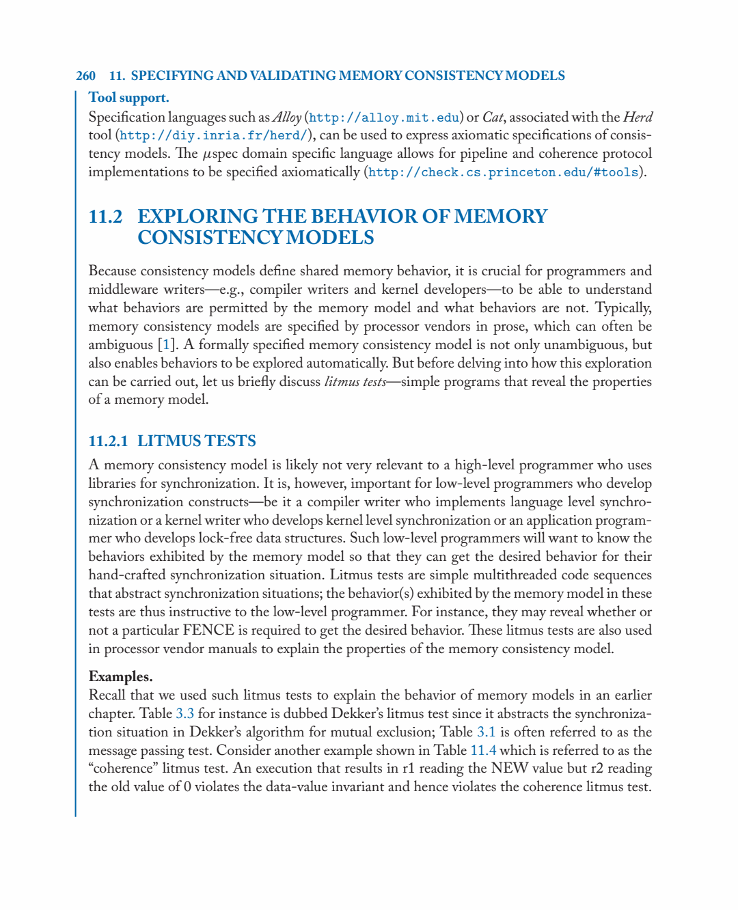
原书第 261 页PDF 283
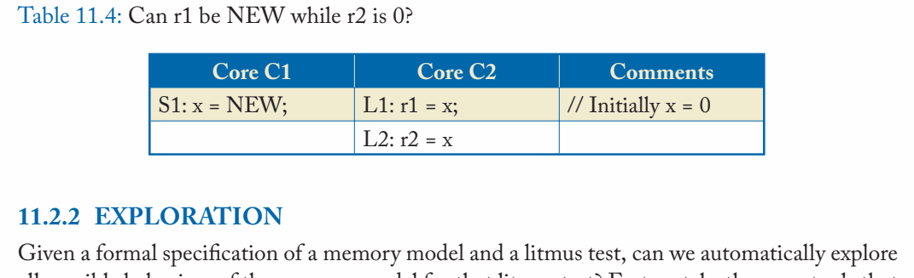
ENGLISHTable 11.4: Can r1 be NEW while r2 is 0?
中文表11.4：r1能否为NEW，同时r2为0？

中文核心C1 核心C2 注释

中文S1: x = NEW;｜L1: r1 = x;｜初始时x = 0。
｜L2: r2 = x
｜L2: r2 = x
ENGLISH11.2.2 EXPLORATION Given a formal specification of a memory model and a litmus test, can we automatically explore all possible behaviors of the memory model for that litmus test? Fortunately, there are tools that do this. Intuitively, once a memory model is formalized—axiomatically or operationally—it is possible to exhaustively enumerate every possible schedule of the litmus test and, for each such execution, employ the mathematical axioms (in case of axiomatic) or execute the state machine (in case of operational) to determine the output of the execution (the values returned by loads).
中文11.2.2 行为探索
给定内存模型的形式化规约和一个试金石测试，能否自动探索该测试下所有可能行为？幸运的是，已有工具可以做到。直观地说，一旦内存模型被公理化或操作式地形式化，就可以穷尽枚举测试的所有可能调度；对于每次执行，使用数学公理，或执行状态机，确定执行结果，即各加载返回的值。
给定内存模型的形式化规约和一个试金石测试，能否自动探索该测试下所有可能行为？幸运的是，已有工具可以做到。直观地说，一旦内存模型被公理化或操作式地形式化，就可以穷尽枚举测试的所有可能调度；对于每次执行，使用数学公理，或执行状态机，确定执行结果，即各加载返回的值。
ENGLISHTool support Recall that the herd tool provides a language to express consistency models mathematically; the tool also has a built-in simulator for exploring behaviors of litmus tests. The ppcmem tool (https://www.cl.cam.ac.uk/~pes20/ppcmem/help.html) does something similar but is specialized for POWER and ARM memory models, while the CppMem tool (http://svrpes20-cppmem.cl.cam.ac.uk/cppmem/) is geared toward the C/C++ language-level memory model. As far as operational models are concerned, the RMEM tool (https://www.cl.cam. ac.uk/~sf502/regressions/rmem/) has built-in operational models for ARM (multiple variants), POWER (multiple variants), x86-TSO and RISC-V, and also allows for their behaviors to be explored.
中文工具支持
herd不仅提供数学化表达内存一致性模型的语言，也内置了探索试金石测试行为的模拟器。ppcmem（https://www.cl.cam.ac.uk/~pes20/ppcmem/help.html）提供类似功能，但专用于POWER和ARM内存模型；CppMem（http://svrpes20-cppmem.cl.cam.ac.uk/cppmem/）面向C/C++语言层内存模型。对于操作式模型，RMEM（https://www.cl.cam.ac.uk/~sf502/regressions/rmem/）内置ARM和POWER的多个变体，以及x86-TSO和RISC-V操作式模型，并支持探索其行为。
herd不仅提供数学化表达内存一致性模型的语言，也内置了探索试金石测试行为的模拟器。ppcmem（https://www.cl.cam.ac.uk/~pes20/ppcmem/help.html）提供类似功能，但专用于POWER和ARM内存模型；CppMem（http://svrpes20-cppmem.cl.cam.ac.uk/cppmem/）面向C/C++语言层内存模型。对于操作式模型，RMEM（https://www.cl.cam.ac.uk/~sf502/regressions/rmem/）内置ARM和POWER的多个变体，以及x86-TSO和RISC-V操作式模型，并支持探索其行为。
ENGLISHHow to generate litmus tests? They can of course be generated manually to test any interesting memory model feature or synchronization situation. There is also tool support. Litmus tests can be generated randomly via a test generator [14, 15]. The diy tool (http: //diy.inria.fr/doc/gen.html) helps generate a litmus test given the shape of the test (the program order relations and the shared memory dependencies). Finally, litmusttestgen (https://github.com/nvlabs/litmustestgen) is a more automated method to generate a comprehensive set of litmus tests for a memory model specification expressed axiomatically.
中文如何生成试金石测试？当然可以手工构造，以检验感兴趣的内存模型特性或同步场景，也有工具可用。测试生成器可以随机生成试金石测试[14, 15]。diy（http://diy.inria.fr/doc/gen.html）可根据给定测试形状，即程序顺序关系和共享内存依赖关系，辅助生成测试。最后，litmusttestgen（https://github.com/nvlabs/litmustestgen）提供更自动化的方法，针对公理化内存模型规约生成全面的试金石测试集合。
ENGLISHWhile litmus tests are a good way to convey intuition about a memory model, they cannot normally serve as a complete specification of the memory model, since they leave some potential behaviors (those that are not covered in the tests) unspecified. But given a sufficient number of tests, and a syntactic template of the memory model (with missing pieces), MemSynth (http: //memsynth.uwplse.org/) shows how a complete memory model satisfying the litmus tests can be synthesized.
中文试金石测试虽有助于建立对内存模型的直观认识，却通常不能充当完整规约，因为它们未定义未被测试覆盖的潜在行为。不过，给定足够多的测试和一个含待填部分的内存模型语法模板，MemSynth（http://memsynth.uwplse.org/）展示了如何合成满足这些测试的完整内存模型。
查看 原书第 261 页 的完整原版面（PDF 283）
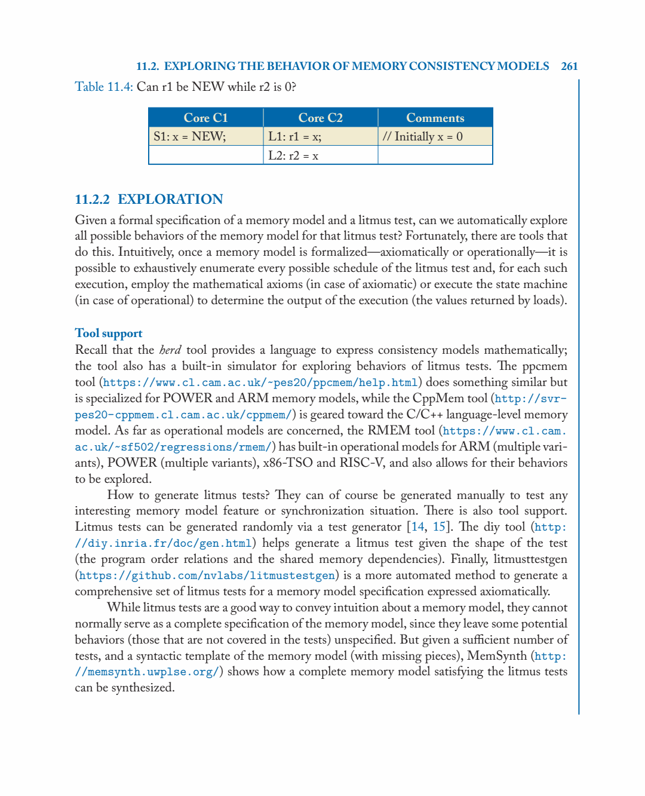
原书第 262 页PDF 284
ENGLISH11.3 VALIDATING IMPLEMENTATIONS
中文11.3 验证实现
ENGLISHMemory consistency enforcement spans multiple sub-systems including the processor pipeline and the cache and memory sub-systems. All of these sub-systems must cooperate with each other to enforce the promised memory consistency model. Validating that they do so correctly is the topic of this section.
中文内存一致性的实现跨越处理器流水线、缓存和存储器等多个子系统。所有子系统必须协同，才能实现承诺的内存一致性模型。本节讨论如何验证这种协同的正确性。
ENGLISHExhaustively validating that the complete implementation satisfies the promised memory model is the end goal. But the sheer complexity of modern multiprocessors makes this a very hard problem. Therefore there is a gamut of validation techniques, ranging from formal verification to informal testing. This is a huge topic in itself and probably worthy of its own book. Here, we provide a flavor of some of these techniques with pointers for further study.
中文最终目标是穷尽验证完整实现满足其承诺的内存模型。但现代多处理器极其复杂，使这一目标十分困难。因此，产生了从形式化验证到非形式化测试的一系列验证技术。这个主题本身非常庞大，足以单独成书。这里仅介绍其中一些方法的基本思路，并给出进一步学习的线索。
ENGLISH11.3.1 FORMAL METHODS In this category, a formal model of an implementation is validated against a specification. We classify these methods based on whether the specification and the implementation are expressed axiomatically or operationally. We then explain each category by considering one or two examples of techniques belonging to that class. We conclude this section with some closing thoughts on operational vs. axiomatic methods.
中文11.3.1 形式化方法
这一类方法依据规约验证实现的形式化模型。我们按照规约和实现分别采用公理化还是操作式描述，对方法分类，并用每类的一两个例子加以说明。最后给出对操作式与公理化方法的几点看法。
这一类方法依据规约验证实现的形式化模型。我们按照规约和实现分别采用公理化还是操作式描述，对方法分类，并用每类的一两个例子加以说明。最后给出对操作式与公理化方法的几点看法。
ENGLISHOperational Implementation against Axiomatic Specification
中文依据公理化规约验证操作式实现
ENGLISHManual proof Given an implementation in the form of an operational model and the specification in the form of an axiomatic model, one can show via a manual proof that the implementation satisfies each of the axioms of the specification.
中文人工证明
给定以操作式模型表示的实现，以及以公理化模型表示的规约，可以通过人工证明，逐一说明实现满足规约的每条公理。
给定以操作式模型表示的实现，以及以公理化模型表示的规约，可以通过人工证明，逐一说明实现满足规约的每条公理。
ENGLISHFor example, consider a system in which the processor pipeline presents loads and stores in program order and a cache coherence protocol that ensures SWMR and data-value invariants. Meixner and Sorin [26] showed that such a system enforces SC by proving that it satisfies each of the SC axioms.
中文例如，考虑一个系统：处理器流水线按程序顺序提交加载和存储，缓存一致性协议保证SWMR和数据值不变式。Meixner和Sorin[26]通过证明该系统满足每条SC公理，说明其实现了SC。
ENGLISHOne powerful template [30] for coming up with a proof follows Lamport’s method for totally ordering the events of a distributed system [18]. The idea is to assign hypothetical timestamps for every independent action (e.g., a fetch of a store instruction at the pipeline) and derive timestamps of causally related events (e.g., a GetM request due to the store gets a higher timestamp). In doing so, a global order of all memory operations is derived. Then every value loaded is checked to determine whether it returns a value consistent with the load value axiom.
中文一种有力的证明模板[30]沿用Lamport为分布式系统事件建立全序的方法[18]：为每个独立动作赋予假想时间戳，例如流水线取出一条存储指令；再推导与之有因果关系的事件的时间戳，例如该存储产生的GetM应取得更大的时间戳。这样就能导出所有访存操作的全局顺序，然后检查每个加载返回值是否符合加载值公理。
ENGLISHModel checking Operational specifications of coherence protocols are commonly verified against axiomatic invariants using model checkers. Model checkers, such as Murphi [12], allow for coherence protocols similar to those described in tabular format in the earlier chapters to be expressed in a domain specific language. The language also allows for axioms such as SWMR to be expressed.
中文模型检查
缓存一致性协议的操作式规约，通常利用模型检查器依据公理化不变式进行验证。例如Murphi[12]允许使用领域专用语言，描述类似前面章节表格形式的协议；该语言也允许表达SWMR等公理。
缓存一致性协议的操作式规约，通常利用模型检查器依据公理化不变式进行验证。例如Murphi[12]允许使用领域专用语言，描述类似前面章节表格形式的协议；该语言也允许表达SWMR等公理。
查看 原书第 262 页 的完整原版面（PDF 284）
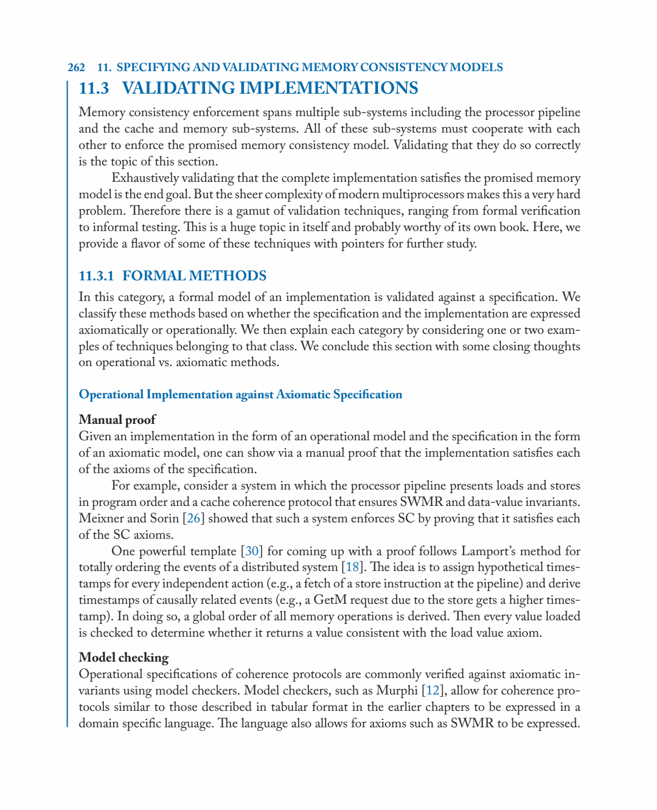
原书第 263 页PDF 285
ENGLISHThen the model checker explores the entire state space of the protocol to either ensure that the invariants hold or report a counter example (a sequence of states that violates the invariant). However, such explicit-state model checking can only be carried out for limited models of the implementation (e.g., two or three addresses, values, and processors) because of state-space explosion.
中文随后，模型检查器探索协议的整个状态空间，或者确认不变式始终成立，或者报告反例，即违反不变式的状态序列。然而，由于状态空间爆炸，这种显式状态模型检查只能用于有限规模的实现模型，例如只有两三个地址、取值和处理器。
ENGLISHThere are a number of approaches for countering state-space explosion. Symbolic model checkers [7] use logic for manipulating sets of states (rather than single states), thereby enabling the scaling of the models. Bounded model checkers [6] compromise on exhaustiveness by only looking for counter examples of a limited length in the sequence of states. Finally, one approach for a complete proof is to model-check exhaustively for a limited system and then employ parameterization [11, 17] to generalize for an arbitrary number of processors, addresses etc.
中文应对状态空间爆炸有多种办法。符号模型检查器[7]利用逻辑操纵状态集合，而非单个状态，从而扩大可处理的模型规模。有界模型检查器[6]只搜索长度有限的状态序列中的反例，因而牺牲穷尽性。最后，要获得完整证明，一种方法是先对有限系统进行穷尽模型检查，再使用参数化方法[11, 17]推广到任意数量的处理器、地址等。
ENGLISHThe following is a concrete example of how a non-trivial coherence protocol can be modelchecked using Murphi: (https://github.com/icsa-caps/c3d-protocol)
中文以下具体示例展示了如何使用Murphi，对一个非平凡的缓存一致性协议进行模型检查：https://github.com/icsa-caps/c3d-protocol
ENGLISHOperational Implementation against Operational Specification Suppose there are two state machines: Q (the implementation) and S (the specification) with the same set of observable actions. How do we prove that Q implements S faithfully? In order to establish this, we need to prove that all of the behaviors—the sequences of observable actions— of Q are contained in S .

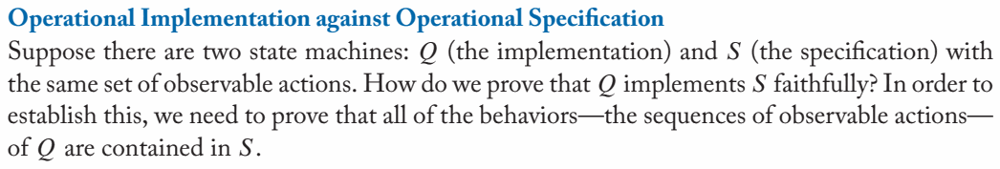
数学符号与上下标以此原版面为准中文依据操作式规约验证操作式实现
假设有两个状态机Q（实现）和S（规约），二者具有相同的可观察动作集合。如何证明Q忠实实现了S？需要证明Q的全部行为，即全部可观察动作序列，都包含在S的行为集合中。
假设有两个状态机Q（实现）和S（规约），二者具有相同的可观察动作集合。如何证明Q忠实实现了S？需要证明Q的全部行为，即全部可观察动作序列，都包含在S的行为集合中。
ENGLISHRefinement One stylized proof technique that allows one to reason about pairs of states in Q and S (rather than sequences) is called refinement [2] (also known as simulation [27]). The key idea is to identify an abstraction function F (also known as refinement mapping or simulation relation) that maps every reachable state of the implementation to that of the specification, such that:

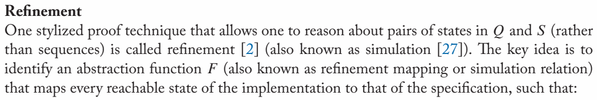
数学符号与上下标以此原版面为准中文精化
一种规范化的证明技术称为精化（refinement）[2]，也称模拟（simulation）[27]。它允许针对Q和S中的状态对进行推理，而不是直接处理序列。关键是找到抽象函数F，也称精化映射或模拟关系，将实现的每个可达状态映射到规约状态，并满足：
一种规范化的证明技术称为精化（refinement）[2]，也称模拟（simulation）[27]。它允许针对Q和S中的状态对进行推理，而不是直接处理序列。关键是找到抽象函数F，也称精化映射或模拟关系，将实现的每个可达状态映射到规约状态，并满足：
ENGLISH• initial states (q Q; s S ) are part of the mapping. That is, F(q ) = s ; and 0 0 0 0 2 2

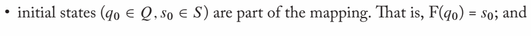
数学符号与上下标以此原版面为准中文• 初始状态包含在映射中。若q₀∈Q、s₀∈S，则F(q₀)=s₀；以及
ENGLISH• the abstraction function preserves state transitions. That is, for every state transition in the a implementation between two states q and q with some observable action a, i.e., q q , i j i j !(cid:0) the abstraction function will lead to two states in the specification with the same observable a action, i.e., F .q / F .q /. i j !(cid:0) For example, consider a cache coherent system containing caches and global memory kept coherent using an MSI coherence protocol on an atomic bus (the implementation). Recall that the overall state of the implementation includes the states of all the caches (value and the MSI state for every location) as well as the state of the global memory. We can show that the cache coherent memory implements atomic memory (the specification) using refinement. To this end, we identify an abstraction function relating the state of cache coherent memory to the state of atomic memory. Specifically, the value of an atomic memory block for a given location is given by: (1) the value of the cache block for that location, if the block is in M state; (2) otherwise, it is

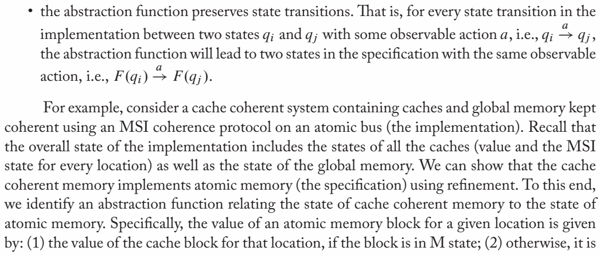
数学符号与上下标以此原版面为准中文• 抽象函数保留状态转换。对于实现中任意带可观察动作a的状态转换qᵢ —a→ qⱼ，抽象函数在规约中也得到带相同可观察动作的转换F(qᵢ) —a→ F(qⱼ)。
例如，考虑一个包含缓存和全局存储器的系统，在原子总线上利用MSI协议保持缓存一致，将其视为实现。实现的整体状态包括所有缓存的状态——每个位置的值与MSI状态——以及全局存储器状态。可以利用精化，证明该缓存一致存储系统实现了原子存储器规约。为此，寻找一个将缓存一致存储系统状态关联到原子存储器状态的抽象函数。具体而言，某位置的原子存储器块值为：（1）若该位置存在M状态缓存块，则取该缓存块的值；（2）否则，它
例如，考虑一个包含缓存和全局存储器的系统，在原子总线上利用MSI协议保持缓存一致，将其视为实现。实现的整体状态包括所有缓存的状态——每个位置的值与MSI状态——以及全局存储器状态。可以利用精化，证明该缓存一致存储系统实现了原子存储器规约。为此，寻找一个将缓存一致存储系统状态关联到原子存储器状态的抽象函数。具体而言，某位置的原子存储器块值为：（1）若该位置存在M状态缓存块，则取该缓存块的值；（2）否则，它
查看 原书第 263 页 的完整原版面（PDF 285）
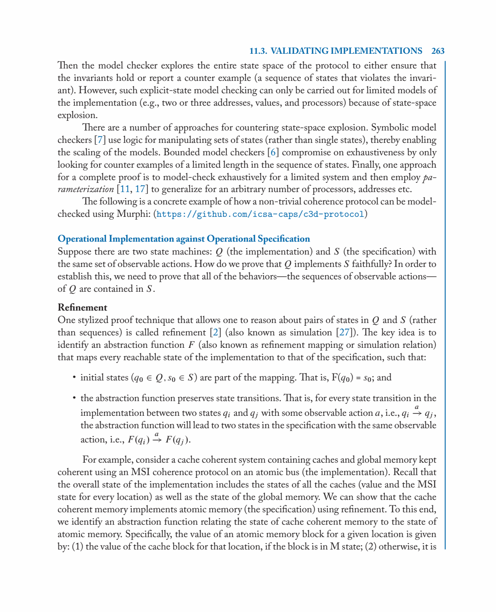
原书第 264 页PDF 286
ENGLISHidentical to the values in each of the blocks that are in S state and the global memory. The proof would then look at all possible state transitions in the protocol to check whether the abstraction W rite.X;1/ function holds. For example, consider the S M transition for some cache block X (cid:0)(cid:0)(cid:0)(cid:0)(cid:0)(cid:0)(cid:0)(cid:0)! whose initial value is 0. For the cache block that goes into M state the abstraction function holds, as it will cache the up-to-date value of 1. For the other cache blocks that were in state S, the abstraction functions holds provided the MSI protocol correctly enforces SWMR and invalidates all those blocks.

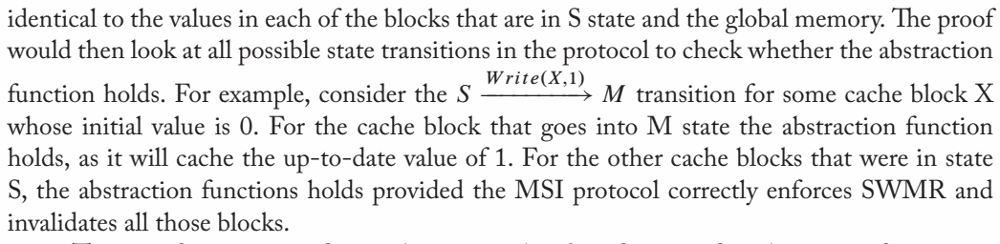
数学符号与上下标以此原版面为准中文等于所有S状态副本以及全局存储器中的相同值。随后检查协议的全部可能状态转换，验证抽象函数是否始终成立。例如，某缓存块X初始值为0，执行Write(X,1)后由S转为M。对于转为M的缓存块，抽象函数成立，因为它缓存最新值1；对于原来处于S的其他缓存块，只要MSI协议正确保证SWMR并使这些块全部失效，抽象函数也成立。
ENGLISHThus, a refinement proof not only requires the identification of an abstraction function, it also requires subsequent reasoning about the state transitions in the implemented system; that process might reveal other invariants (e.g., SMWR revealed above) that need to be proven. The Kami framework [10] uses a refinement proof to show that an operational specification of a processor combined with a cache coherent memory system satisfies SC.
中文因此，精化证明不仅需要找到抽象函数，还需要进一步推理实现中的状态转换；这一过程可能揭示其他必须证明的不变式，例如上面的SWMR。Kami框架[10]使用精化证明，说明处理器的操作式规约与缓存一致存储系统组合后满足SC。
ENGLISHModel checking One way to show that an implementation satisfies the specification is to run the two state machines side by side with the same sequence of input actions, and observe whether they produce the same output actions. While this simple strategy is sound, it may not always succeed. (When the method says that the state machines are equivalent they are definitely equivalent—but when it says they are not equivalent, they may yet turn out to be equivalent.) This is because of the non-determinism inherent in concurrent systems—sometimes, the specification and the implementation may show identical behavior, but with different schedules. Having said this, this is quite a useful strategy, especially when the implementation and specification are conceptually similar. Banks et al. [5] employed this strategy to show that a cache coherence protocol satisfies the promised consistency model.
中文模型检查
证明实现满足规约的一种方式，是让两个状态机接受相同输入动作序列，并行运行，然后观察输出动作是否相同。这种简单策略是可靠的，但未必总能成功：当它判断等价时，二者确实等价；当它判断不等价时，二者仍可能等价。原因是并发系统具有固有的非确定性，规约与实现有时在不同调度下才表现出相同行为。尽管如此，这一策略仍很有用，尤其当实现与规约在概念上相近时。Banks等人[5]就采用此方法，证明某缓存一致性协议满足承诺的内存一致性模型。
证明实现满足规约的一种方式，是让两个状态机接受相同输入动作序列，并行运行，然后观察输出动作是否相同。这种简单策略是可靠的，但未必总能成功：当它判断等价时，二者确实等价；当它判断不等价时，二者仍可能等价。原因是并发系统具有固有的非确定性，规约与实现有时在不同调度下才表现出相同行为。尽管如此，这一策略仍很有用，尤其当实现与规约在概念上相近时。Banks等人[5]就采用此方法，证明某缓存一致性协议满足承诺的内存一致性模型。
ENGLISHAxiomatic Implementation Against Axiomatic Specification We saw how implementations (such as the core pipeline implementation) can be specified axiomatically. How to formally validate that such an axiomatic model satisfies the axiomatic specification1 of the consistency model?
中文依据公理化规约验证公理化实现
前面已经看到，核心流水线等实现也可以用公理化方法描述。如何形式化验证这一模型满足内存一致性模型的公理化规约¹？
前面已经看到，核心流水线等实现也可以用公理化方法描述。如何形式化验证这一模型满足内存一致性模型的公理化规约¹？
ENGLISHThe Check line of work [20, 21, 24], leverages the idea of exhaustive exploration for this purpose. Given a litmus test and an axiomatic specification of the memory model, we saw in Section 11.2 how all of the behaviors of the memory model on the litmus test can be exhaustively explored. Such an exhaustive exploration can be carried out for axiomatic specifications of implementations as well. The behaviors on the litmus test can then be compared against the behaviors on the abstract axiomatic model. If the implementation shows more behavior, it indicates a bug in the implementation. On the other hand, if the implementation shows less behavior than the specification, it indicates that the implementation is conservative. The same process is then repeated for other litmus tests that are part of the suite.
中文Check系列工作[20, 21, 24]利用穷尽探索解决这一问题。11.2节说明了，给定试金石测试和内存模型的公理化规约，可以穷尽探索模型在该测试下的全部行为。对于实现的公理化模型，同样可以穷尽探索；然后将其测试行为与抽象公理化模型的行为比较。如果实现出现规约不允许的额外行为，说明实现存在缺陷；如果实现允许的行为比规约更少，说明实现较为保守。对测试套件中的其他试金石测试重复这一过程即可。
ENGLISH1This section assumes validation against an axiomatic specification. A similar approach validating an axiomatic model of an implementation against operational specification is possible, although we know of no such proposal in this category.
中文¹ 本节假设依据公理化规约进行验证。也可以采用类似方法，依据操作式规约验证实现的公理化模型，但我们尚不知道这一类别中已有的具体方案。
查看 原书第 264 页 的完整原版面（PDF 286）
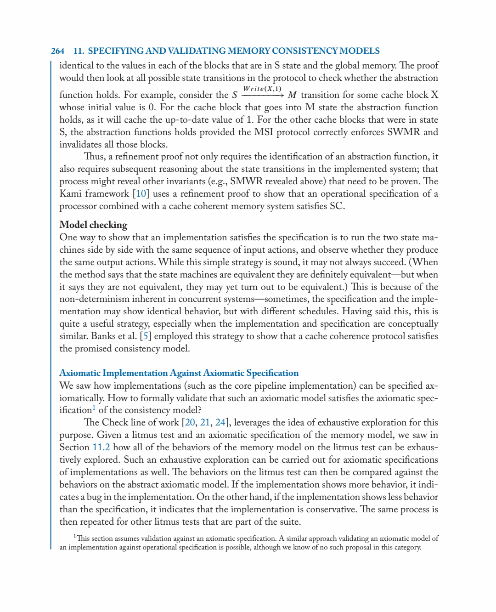
原书第 265 页PDF 287
ENGLISHOne limitation of the above approach is that the validation is exhaustive only for the litmus tests explored. A complete verification requires exploring all possible programs. PipeProof [22] accomplishes this with an induction style proof on a symbolic abstraction of a program which allows for programs of any number of instructions and all possible addresses and values to be modeled.
中文上述方法的局限在于，穷尽性仅限于所探索的试金石测试。完整验证需要探索所有可能程序。PipeProof[22]通过在程序的符号抽象上进行归纳式证明实现这一目标，其模型能够表示任意指令数量，以及全部可能地址和取值。
ENGLISHSummary: Operational vs. Axiomatic Generally speaking, axiomatic specifications are declarative; they describe what behaviors are permitted without fully describing how the system is implemented. Typically, they are more abstract and more easily expressed in mathematics; thus, it is faster to explore their behaviors. On the other side of the coin, operational models are closer to implementations and more intuitive for an architect; thus, it is arguably easier to model detailed implementations operationally. Recall that we were able to naturally describe fairly complex coherence protocols in the earlier chapter in table format. In summary, whether to go down the axiomatic or operational route is not a question that has a simple answer.
中文小结：操作式与公理化方法
一般而言，公理化规约具有声明性：描述允许哪些行为，而不完整说明系统如何实现。它通常更抽象，也更容易用数学表达，因此行为探索更快。另一方面，操作式模型更接近实现，对体系结构设计者也更直观，所以通常更容易用于详细实现建模。前面章节已经能用表格自然描述相当复杂的缓存一致性协议。因此，选择公理化还是操作式方法，并没有简单统一的答案。
一般而言，公理化规约具有声明性：描述允许哪些行为，而不完整说明系统如何实现。它通常更抽象，也更容易用数学表达，因此行为探索更快。另一方面，操作式模型更接近实现，对体系结构设计者也更直观，所以通常更容易用于详细实现建模。前面章节已经能用表格自然描述相当复杂的缓存一致性协议。因此，选择公理化还是操作式方法，并没有简单统一的答案。
ENGLISHFinally, it is important to understand that hybrid axiomatic/operational models are also possible. For example, let us consider a multiprocessor with caches kept coherent using a coherence protocol. Instead of describing the coherence protocol operationally, it is also possible to abstract it axiomatically using the SWMR and the data-value invariants. Such an approach might be attractive when breaking down a complex verification problem into simpler ones—for example, when verifying that the combination of the pipeline and the memory system correctly enforces the consistency model, it might make sense to verify the coherence protocol independently and then abstract it axiomatically via SMWR.
中文最后，也可以构建公理化与操作式混合的模型。例如，对一个通过协议维持各缓存一致性的多处理器，不一定要操作式地描述缓存一致性协议，也可以用SWMR和数据值不变式进行公理化抽象。将复杂验证问题拆分为较简单的问题时，这种方式很有吸引力。例如，验证流水线与存储系统组合后是否正确实现目标内存一致性模型时，可以先独立验证缓存一致性协议，再用SWMR对其进行公理化抽象。
ENGLISH11.3.2 TESTING Formally proving that the implementation satisfies the specification provides high confidence that the implementation is indeed correct. Yet, formal verification is not a panacea. The reasons are threefold. First, formal verification is hard to scale. Automatic techniques such as model checking may not be able to handle the humongous state spaces of complex implementations; on the other hand, techniques that can handle such large state spaces are not fully automated and are not easy for architects. Second, formally specifying an implementation correctly is not straightforward and may be error prone. Third, even if the model is accurate, it may be incomplete, in the sense that there might be parts of the implementation that the model does not consider. That is why testing the final implementation thoroughly is extremely important. We classify testing into two categories: offline testing and online testing. In the former (also known as static testing), a real or simulated multiprocessor is tested for consistency violations prior to being deployed. With the latter, violations are detected at runtime after deployment.
中文11.3.2 测试
形式化证明实现满足规约，可以让我们高度相信其正确性，但形式化验证并非万能，原因有三。首先，它难以扩展：模型检查等自动技术可能无法处理复杂实现的巨大状态空间；能够处理这种空间的技术又往往不能完全自动化，体系结构设计者也不易掌握。其次，正确形式化描述一个实现并非易事，本身就可能出错。第三，即使模型准确，也可能不完整，忽略实现的某些部分。因此，充分测试最终实现极其重要。测试可分为离线测试与在线测试。前者也称静态测试，在部署之前，检查真实或仿真的多处理器是否违反内存一致性；后者在部署之后的运行期间检测违规。
形式化证明实现满足规约，可以让我们高度相信其正确性，但形式化验证并非万能，原因有三。首先，它难以扩展：模型检查等自动技术可能无法处理复杂实现的巨大状态空间；能够处理这种空间的技术又往往不能完全自动化，体系结构设计者也不易掌握。其次，正确形式化描述一个实现并非易事，本身就可能出错。第三，即使模型准确，也可能不完整，忽略实现的某些部分。因此，充分测试最终实现极其重要。测试可分为离线测试与在线测试。前者也称静态测试，在部署之前，检查真实或仿真的多处理器是否违反内存一致性；后者在部署之后的运行期间检测违规。
查看 原书第 265 页 的完整原版面（PDF 287）
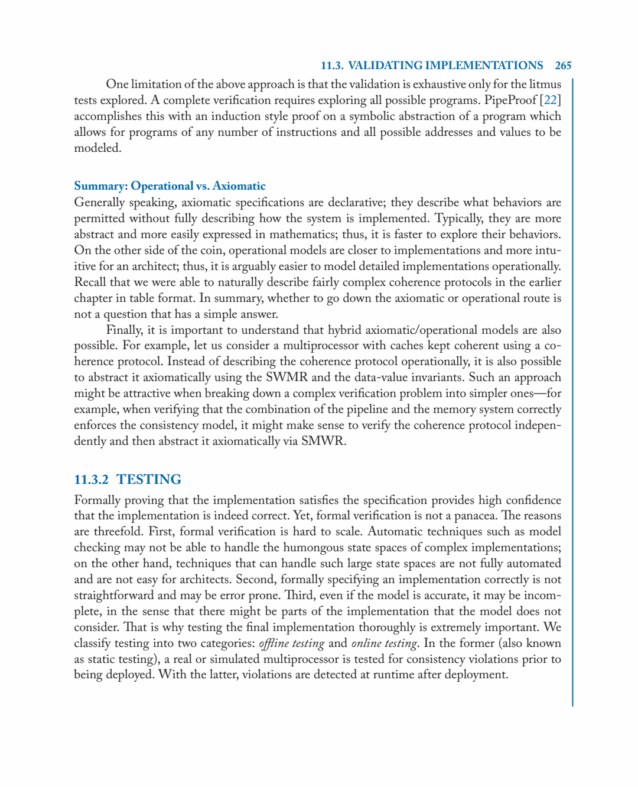
原书第 266 页PDF 288
ENGLISHOffline Testing The idea is to run test programs on a real (or simulated) machine, observe their behaviors, and validate them. The approach raises two questions: How are the test programs generated? How are their behaviors validated?
中文离线测试
基本思路是在真实或仿真的机器上运行测试程序，观察行为并验证。这引出两个问题：如何生成测试程序？如何验证其行为？
基本思路是在真实或仿真的机器上运行测试程序，观察行为并验证。这引出两个问题：如何生成测试程序？如何验证其行为？
ENGLISHOne of the earlier works on memory consistency testing, TSOtool [15], uses a pseudorandom generator to generate short test programs. Given a previously unseen randomly generated program, how to validate its observed behavior (values returned by reads)? This is the key challenge that TSOtool addresses. Intuitively, this demands a consistency checker that dynamically reconstructs a global order from the observations and checks whether the order is allowed by the consistency model While reconstructing a global order from values returned by reads is an NP-complete problem, TSOtool comes up with a polynomial algorithm that trades off accuracy for performance (it might miss some violations). MTraceCheck [19] improves upon this checker further.
中文较早的内存一致性测试工作TSOtool[15]使用伪随机生成器产生短测试程序。对于一个此前未见过的随机程序，如何验证观察到的行为，即读取返回的值？这是TSOtool解决的关键挑战。直观地说，需要一个一致性检查器，根据观测动态重建全局顺序，并检查该顺序是否被模型允许。根据读值重建全局顺序是NP完全问题；TSOtool给出了多项式时间算法，以牺牲部分精确性换取性能，因此可能漏掉某些违规。MTraceCheck[19]进一步改进了该检查器。
ENGLISHInstead of using randomly generated programs, one can use litmus tests (Section 11.2.1). With litmus tests, the advantage is that a suite of tests is already available for most memory models; moreover, for each litmus test the expected behavior is known, which obviates the need for a sophisticated checker that reconstructs the global memory order. The litmus tool diy (http://diy.inria.fr/doc/litmus.html) is a framework for testing real processors using this approach.
中文也可以用试金石测试（11.2.1节）代替随机程序。其优势是：大多数内存模型已有现成测试套件，而且每个测试的预期行为已知，无须复杂检查器重建全局内存顺序。diy的litmus工具（http://diy.inria.fr/doc/litmus.html）就是采用这种方式测试真实处理器的框架。
ENGLISHWhile litmus testing and random testing are effective in a post-silicon environment, they may not be that effective in a slow simulator environment. McVersi [14] proposes a geneticprogramming-based approach that leverages the white-box nature of the simulator environment to come up with test programs that are likely to reveal consistency violations faster.
中文试金石测试与随机测试在流片后的实硅环境中很有效，但在运行缓慢的仿真器中可能不够高效。McVersi[14]提出基于遗传编程的方法，利用仿真器的白盒特性，生成更可能快速暴露内存一致性违规的测试程序。
ENGLISHOnline Testing Offline testing is certainly beneficial but, because of the fundamental limitation of testing, it may fail to uncover some bugs. Furthermore, even if offline testing did not miss any bugs, hardware transient errors and fabrication errors may yet cause consistency violations in the wild. In online testing (also known as dynamic testing), hardware support is added to a multiprocessor for detecting such violations during execution. One conceptually straightforward way to do this is to implement a consistency checker as in TSOtool, but in hardware. However, a naive implementation of such a scheme would be impractically expensive in terms of memory (metadata) and communication overhead. Chen et al. [9] propose a scheme to reduce these costs significantly, leveraging the fact that not all memory operations need to be tracked (e.g., loads and stores to local variables need not be tracked). Meixner and Sorin [25] propose an alternative strategy that reduces the verification task into that of verifying two invariants: (a) checking that the cache coherence protocol correctly enforces SWMR; and (b) checking that the pipeline correctly interacts with the coherence protocol. Notably, they show that these two invariants can be efficiently checked in hardware.
中文在线测试
离线测试当然有益，但受测试固有局限影响，可能遗漏缺陷。即使它没有漏掉设计缺陷，硬件瞬态错误和制造缺陷仍可能在实际运行中导致一致性违规。在线测试也称动态测试，通过为多处理器增加硬件支持，在执行期间检测此类违规。概念上最直接的办法，是在硬件中实现类似TSOtool的一致性检查器，但朴素实现所需的存储器元数据和通信开销高得不切实际。Chen等人[9]利用无须跟踪全部访存操作这一事实，例如本地变量的加载和存储可以不跟踪，显著降低了成本。Meixner和Sorin[25]提出另一种策略，将验证任务归约为检查两个不变式：（a）缓存一致性协议正确维持SWMR；（b）流水线与协议正确交互。他们还证明，这两个不变式能够在硬件中高效检查。
离线测试当然有益，但受测试固有局限影响，可能遗漏缺陷。即使它没有漏掉设计缺陷，硬件瞬态错误和制造缺陷仍可能在实际运行中导致一致性违规。在线测试也称动态测试，通过为多处理器增加硬件支持，在执行期间检测此类违规。概念上最直接的办法，是在硬件中实现类似TSOtool的一致性检查器，但朴素实现所需的存储器元数据和通信开销高得不切实际。Chen等人[9]利用无须跟踪全部访存操作这一事实，例如本地变量的加载和存储可以不跟踪，显著降低了成本。Meixner和Sorin[25]提出另一种策略，将验证任务归约为检查两个不变式：（a）缓存一致性协议正确维持SWMR；（b）流水线与协议正确交互。他们还证明，这两个不变式能够在硬件中高效检查。
查看 原书第 266 页 的完整原版面（PDF 288）
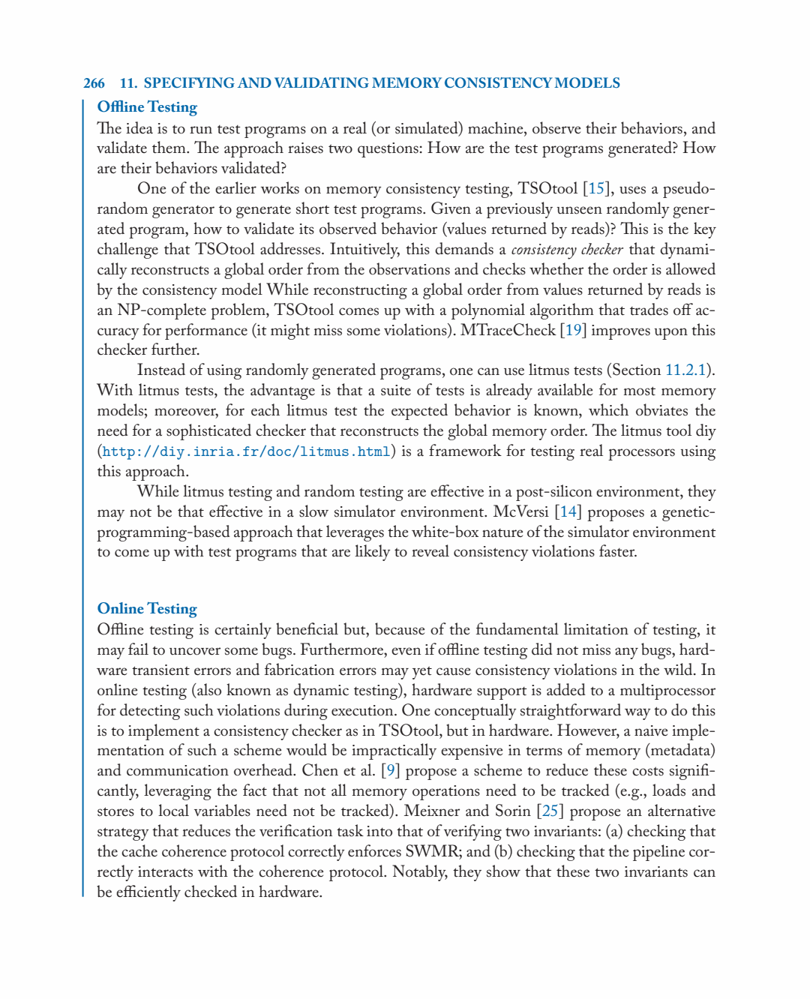
原书第 267 页PDF 289
ENGLISH11.4 HISTORY AND FURTHER READING
中文11.4 历史与延伸阅读
ENGLISHIn the same paper that Lamport defined SC, he also provided (its first) operational specification. The specification is a variant of, and semantically equivalent to, our SC Operational Spec1 in Section 11.1.1. It is interesting to note that the very first operational specification of SC employed a linearizable memory system. (Herlihy and Wing [16] formalized linearizability a decade later.) The first operational specification of SC that used a consistency-directed (i.e., non-linearizable) coherence protocol was proposed by Afek et al. [3]. Shasha and Snir [34] were the first to provide an axiomatic specification of SC.
中文Lamport在定义SC的同一篇论文中，也给出了首个SC操作式规约。它是11.1.1节SC操作式规约1的一个变体，二者语义等价。有趣的是，最早的SC操作式规约就采用了可线性化的存储系统，而Herlihy和Wing[16]是在十年后才形式化可线性化性。Afek等人[3]首次提出采用由内存一致性模型指导、即可不满足可线性化性的缓存一致性协议的SC操作式规约。Shasha和Snir[34]则首次给出SC的公理化规约。
ENGLISHThe 1990s and early 2000s saw significant research on formally verifying coherence protocols, not only against invariants such as SWMR but also against memory consistency models [32]. Park and Dill [29] showed how the protocol used in the FLASH multiprocessor protocol can be abstracted and verified using a theorem prover. Qadeer [33] showed that verifying against SC is undecidable, but can be made tractable for most practical protocols. Chatterjee et al. [8] showed how the pipeline combined with a coherence protocol can be automatically verified against an operational specification of a weak memory model in a model checker.
中文20世纪90年代到21世纪初，缓存一致性协议的形式化验证取得了大量进展，既验证SWMR等不变式，也依据内存一致性模型验证[32]。Park和Dill[29]展示了如何抽象FLASH多处理器协议，并使用定理证明器验证。Qadeer[33]指出，针对SC的验证在一般情况下不可判定，但对多数实际协议可以处理。Chatterjee等人[8]展示了如何在模型检查器中，将流水线与缓存一致性协议联合起来，依据弱内存模型的操作式规约进行自动验证。
ENGLISHBecause of the complexity of formally verifying coherence protocols—state space explosion combined with the complexity of parameterization—there have been efforts to design coherence protocols in a way that enables straightfoward parameterized verification for an indefinite number of processors [37, 38]. Another promising direction is a correct-by-construction approach to coherence protocols. TRANSIT [36] and verC3 [13] leverage program synthesis technology for auto-completing coherence protocols given a partial implementation. Proto- Gen [28] proposes a method for automatically producing a complete and concurrent protocol (with transient states and actions) given an atomic protocol with only stable states and transitions.
中文由于协议形式化验证面临状态空间爆炸与参数化复杂性，一些工作尝试从设计阶段就让协议易于对任意数量的处理器进行参数化验证[37, 38]。另一条有前景的方向是构造即正确的协议设计。TRANSIT[36]与verC3[13]利用程序合成技术，根据部分实现自动补全缓存一致性协议。ProtoGen[28]则提出：给定仅有稳定状态和转换的原子协议，自动生成包含瞬态状态及动作的完整并发协议。
ENGLISHIn this chapter, we focused on methods for validating whether or not the microarchitecture specification (e.g., pipelines and coherence protocols) satisfies the architectural consistency specification. However, a complete validation requires spanning the stack from high-level languages, (through compilers, ISA, microarchitecture) to RTL. TriCheck [35] validates that the HLL, compiler, ISA, and microarchitecture satisfy the language-level consistency specification for a set of litmus tests. RTLCheck [23] validates that the RTL faithfully implements the microarchitectural consistency specification for a set of litmus tests.
中文本章重点讨论了如何验证微体系结构规约，例如流水线和缓存一致性协议，是否满足体系结构层的内存一致性规约。但完整验证需要贯穿整个技术栈，从高级语言，经编译器、ISA和微体系结构，一直到寄存器传输级（RTL）。TriCheck[35]针对一组试金石测试，验证高级语言、编译器、ISA与微体系结构是否满足语言层一致性规约。RTLCheck[23]则针对一组试金石测试，验证RTL是否忠实实现微体系结构的一致性规约。
ENGLISHTo conclude, we must stress here that we have but scratched the surface on this topic that is, despite its long history, continuing to see exciting new results.
中文最后必须强调，本章仅触及这一主题的表层。尽管它已有悠久历史，令人振奋的新成果仍在不断涌现。
ENGLISH11.5 REFERENCES
中文11.5 参考文献
ENGLISH[1] Linux Kernel mailing list: Spin unlock optimization. https://lists.gt.net/engine? post=105365;list=linux 260
中文[1] Linux内核邮件列表：自旋锁解锁优化. https://lists.gt.net/engine?post=105365;list=linux 260
查看 原书第 267 页 的完整原版面（PDF 289）
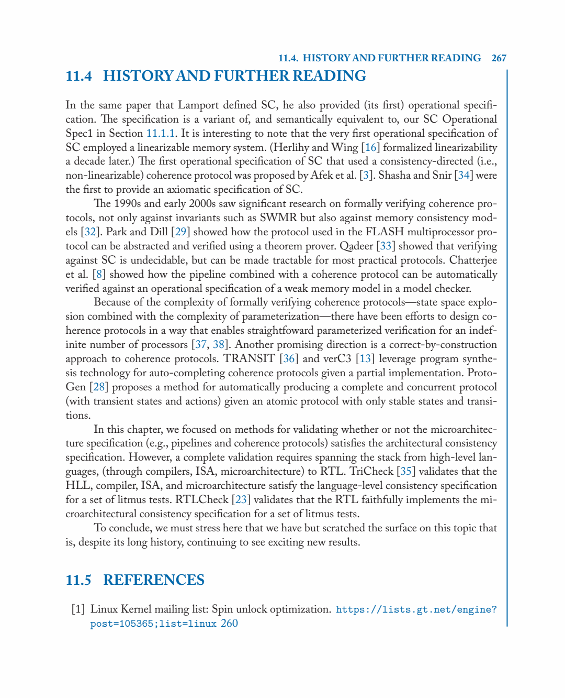
原书第 268 页PDF 290
ENGLISH[2] M. Abadi and L. Lamport. The existence of refinement mappings. Theoretical Computer Science, 82(2):253–284, 1991. DOI: 10.1109/lics.1988.5115 263
中文[2] M. Abadi and L. Lamport. 精化映射的存在性. Theoretical Computer Science, 82(2):253–284, 1991. DOI: 10.1109/lics.1988.5115 263
ENGLISH[3] Y. Afek, G. M. Brown, and M. Merritt. Lazy caching. ACM Transactions on Programming Languages and Systems, 15(1):182–205, 1993. DOI: 10.1145/151646.151651 255, 267
中文[3] Y. Afek, G. M. Brown, and M. Merritt. 惰性缓存. ACM Transactions on Programming Languages and Systems, 15(1):182–205, 1993. DOI: 10.1145/151646.151651 255, 267
ENGLISH[4] J. Alglave, L. Maranget, and M. Tautschnig. Herding cats: Modelling, simulation, testing, and data mining for weak memory. ACM Transactions on Programming Languages and Systems, 36(2):7:1–7:74, 2014. DOI: 10.1145/2627752 256
中文[4] J. Alglave, L. Maranget, and M. Tautschnig. Herding cats：弱内存的建模、仿真、测试与数据挖掘. ACM Transactions on Programming Languages and Systems, 36(2):7:1–7:74, 2014. DOI: 10.1145/2627752 256
ENGLISH[5] C. J. Banks, M. Elver, R. Hoffmann, S. Sarkar, P. Jackson, and V. Nagarajan. Verification of a lazy cache coherence protocol against a weak memory model. In Formal Methods in Computer Aided Design (FMCAD), pages 60–67, Vienna, Austria, October 2–6, 2017. DOI: 10.23919/fmcad.2017.8102242 264
中文[5] C. J. Banks, M. Elver, R. Hoffmann, S. Sarkar, P. Jackson, and V. Nagarajan. 依据弱内存模型验证惰性缓存一致性协议. In Formal Methods in Computer Aided Design (FMCAD), pages 60–67, Vienna, Austria, October 2–6, 2017. DOI: 10.23919/fmcad.2017.8102242 264
ENGLISH[6] A. Biere, A. Cimatti, E. M. Clarke, and Y. Zhu. Symbolic model checking without BDDs. In Tools and Algorithms for Construction and Analysis of Systems, 5th International Conference (TACAS), Held as Part of the Proc. of the European Joint Conferences on the Theory and Practice of Software (ETAPS), pages 193–207, Amsterdam, The Netherlands, March 22–28,
中文[6] A. Biere, A. Cimatti, E. M. Clarke, and Y. Zhu. 不使用BDD的符号模型检查. In Tools and Algorithms for Construction and Analysis of Systems, 5th International Conference (TACAS), Held as Part of the Proc. of the European Joint Conferences on the Theory and Practice of Software (ETAPS), pages 193–207, Amsterdam, The Netherlands, March 22–28,
ENGLISH1999. DOI: 10.21236/ada360973 263
中文1999. DOI: 10.21236/ada360973 263
ENGLISH[7] J. R. Burch, E. M. Clarke, K. L. McMillan, and D. L. Dill. Sequential circuit verification using symbolic model checking. In Proc. of the 27th ACM/IEEE Design Automation Conference, pages 46–51, Orlando, FL, June 24–28, 1990. DOI: 10.1109/dac.1990.114827 263
中文[7] J. R. Burch, E. M. Clarke, K. L. McMillan, and D. L. Dill. 利用符号模型检查验证时序电路. In Proc. of the 27th ACM/IEEE Design Automation Conference, pages 46–51, Orlando, FL, June 24–28, 1990. DOI: 10.1109/dac.1990.114827 263
ENGLISH[8] P. Chatterjee, H. Sivaraj, and G. Gopalakrishnan. Shared memory consistency protocol verification against weak memory models: Refinement via model-checking. In Proc. Computer Aided Verification, 14th International Conference (CAV), pages 123–136, Copenhagen, Denmark, July 27–31, 2002. DOI: 10.1007/3-540-45657-0_10 267
中文[8] P. Chatterjee, H. Sivaraj, and G. Gopalakrishnan. 依据弱内存模型验证共享内存一致性协议：通过模型检查实现精化. In Proc. Computer Aided Verification, 14th International Conference (CAV), pages 123–136, Copenhagen, Denmark, July 27–31, 2002. DOI: 10.1007/3-540-45657-0_10 267
ENGLISH[9] K. Chen, S. Malik, and P. Patra. Runtime validation of memory ordering using constraint graph checking. In 14th International Conference on High-Performance Computer Architecture (HPCA-14), pages 415–426, Salt Lake City, UT, February 16–20, 2008. DOI: 10.1109/hpca.2008.4658657 266
中文[9] K. Chen, S. Malik, and P. Patra. 利用约束图检查在运行时验证访存顺序. In 14th International Conference on High-Performance Computer Architecture (HPCA-14), pages 415–426, Salt Lake City, UT, February 16–20, 2008. DOI: 10.1109/hpca.2008.4658657 266
ENGLISH[10] J. Choi, M. Vijayaraghavan, B. Sherman, A. Chlipala, and Arvind. Kami: A platform for high-level parametric hardware specification and its modular verification. PACMPL, 1(ICFP):24:1–24:30, 2017. DOI: 10.1145/3110268 264
中文[10] J. Choi, M. Vijayaraghavan, B. Sherman, A. Chlipala, and Arvind. Kami：高层参数化硬件规约及其模块化验证平台. PACMPL, 1(ICFP):24:1–24:30, 2017. DOI: 10.1145/3110268 264
ENGLISH[11] C. Chou, P. K. Mannava, and S. Park. A simple method for parameterized verification of cache coherence protocols. In Proc. Formal Methods in Computer-Aided Design, 5th International Conference (FMCAD), pages 382–398, Austin, TX, November 15–17, 2004. DOI: 10.1007/978-3-540-30494-4_27 263
中文[11] C. Chou, P. K. Mannava, and S. Park. 一种缓存一致性协议参数化验证的简单方法. In Proc. Formal Methods in Computer-Aided Design, 5th International Conference (FMCAD), pages 382–398, Austin, TX, November 15–17, 2004. DOI: 10.1007/978-3-540-30494-4_27 263
查看 原书第 268 页 的完整原版面（PDF 290）
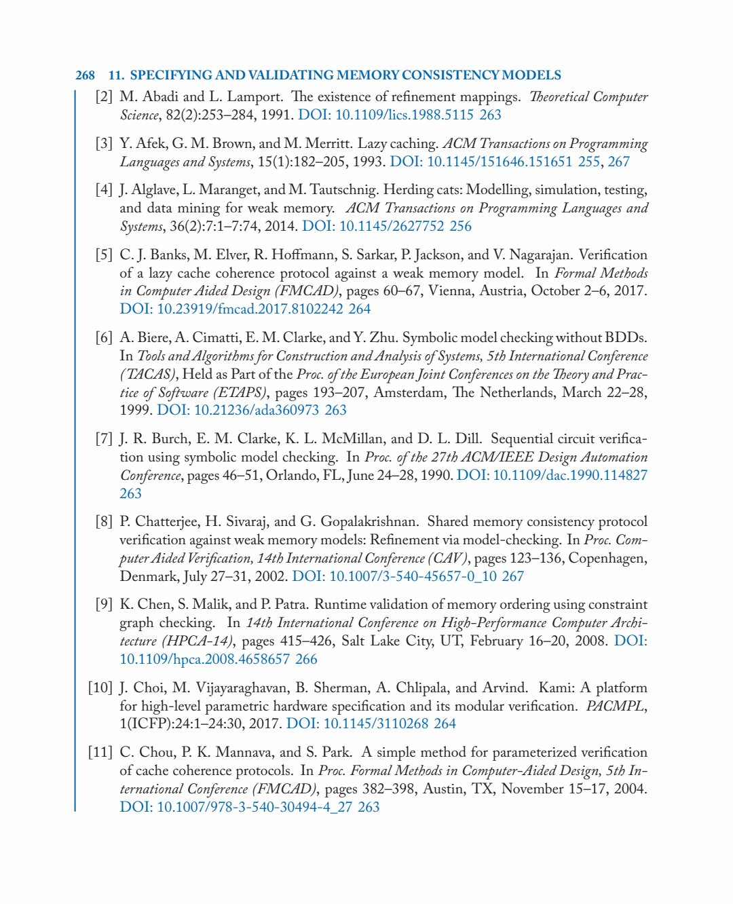
原书第 269 页PDF 291
ENGLISH[12] D. L. Dill. The Murphi verification system. In Proc. Computer Aided Verification, 8th International Conference (CAV), pages 390–393, New Brunswick, NJ, July 31–August 3,
中文[12] D. L. Dill. Murphi验证系统. In Proc. Computer Aided Verification, 8th International Conference (CAV), pages 390–393, New Brunswick, NJ, July 31–August 3,
ENGLISH1996. 262
中文1996. 262
ENGLISH[13] M. Elver, C. J. Banks, P. Jackson, and V. Nagarajan. Verc3: A library for explicit state synthesis of concurrent systems. In Design, Automation and Test in Europe Conference and Exhibition (DATE), pages 1381–1386, Dresden, Germany, March 19–23, 2018. DOI: 10.23919/date.2018.8342228 267
中文[13] M. Elver, C. J. Banks, P. Jackson, and V. Nagarajan. Verc3：用于并发系统显式状态合成的库. In Design, Automation and Test in Europe Conference and Exhibition (DATE), pages 1381–1386, Dresden, Germany, March 19–23, 2018. DOI: 10.23919/date.2018.8342228 267
ENGLISH[14] M. Elver and V. Nagarajan. Mcversi: A test generation framework for fast memory consistency verification in simulation. In IEEE International Symposium on High Performance Computer Architecture (HPCA), pages 618–630, Barcelona, Spain, March 12–16, 2016. DOI: 10.1109/hpca.2016.7446099 261, 266
中文[14] M. Elver and V. Nagarajan. Mcversi：面向仿真中快速内存一致性验证的测试生成框架. In IEEE International Symposium on High Performance Computer Architecture (HPCA), pages 618–630, Barcelona, Spain, March 12–16, 2016. DOI: 10.1109/hpca.2016.7446099 261, 266
ENGLISH[15] S. Hangal, D. Vahia, C. Manovit, J. J. Lu, and S. Narayanan. TSOtool: A program for verifying memory systems using the memory consistency model. In 31st International Symposium on Computer Architecture (ISCA), pages 114–123, Munich, Germany, June 19– 23, 2004. DOI: 10.1109/isca.2004.1310768 261, 266
中文[15] S. Hangal, D. Vahia, C. Manovit, J. J. Lu, and S. Narayanan. TSOtool：利用内存一致性模型验证存储系统的程序. In 31st International Symposium on Computer Architecture (ISCA), pages 114–123, Munich, Germany, June 19–23, 2004. DOI: 10.1109/isca.2004.1310768 261, 266
ENGLISH[16] M. Herlihy and J. M. Wing. Linearizability: A correctness condition for concurrent objects. ACM Transactions on Programming Languages and Systems, 12(3):463–492, 1990. DOI: 10.1145/78969.78972 255, 267
中文[16] M. Herlihy and J. M. Wing. 可线性化性：并发对象的正确性条件. ACM Transactions on Programming Languages and Systems, 12(3):463–492, 1990. DOI: 10.1145/78969.78972 255, 267
ENGLISH[17] R. Jhala and K. L. McMillan. Microarchitecture verification by compositional model checking. In Proc. Computer Aided Verification, 13th International Conference (CAV), pages 396–410, Paris, France, July 18–22, 2001. DOI: 10.1007/3-540-44585-4_40 263
中文[17] R. Jhala and K. L. McMillan. 通过组合式模型检查验证微体系结构. In Proc. Computer Aided Verification, 13th International Conference (CAV), pages 396–410, Paris, France, July 18–22, 2001. DOI: 10.1007/3-540-44585-4_40 263
ENGLISH[18] L. Lamport. Time, clocks, and the ordering of events in a distributed system. Communications on ACM, 21(7):558–565, 1978. DOI: 10.1145/359545.359563 262
中文[18] L. Lamport. 分布式系统中的时间、时钟与事件排序. Communications on ACM, 21(7):558–565, 1978. DOI: 10.1145/359545.359563 262
ENGLISH[19] D. Lee and V. Bertacco. MTraceCheck: Validating non-deterministic behavior of memory consistency models in post-silicon validation. In Proc. of the 44th Annual International Symposium on Computer Architecture (ISCA), pages 201–213, Toronto, ON, Canada, June 24–28, 2017. DOI: 10.1145/3079856.3080235 266
中文[19] D. Lee and V. Bertacco. MTraceCheck：在流片后验证中检查内存一致性模型的非确定性行为. In Proc. of the 44th Annual International Symposium on Computer Architecture (ISCA), pages 201–213, Toronto, ON, Canada, June 24–28, 2017. DOI: 10.1145/3079856.3080235 266
ENGLISH[20] D. Lustig, M. Pellauer, and M. Martonosi. PipeCheck: Specifying and verifying microarchitectural enforcement of memory consistency models. In 47th Annual IEEE/ACM International Symposium on Microarchitecture (MICRO), pages 635–646, Cambridge, UK, December 13–17, 2014. DOI: 10.1109/micro.2014.38 258, 264
中文[20] D. Lustig, M. Pellauer, and M. Martonosi. PipeCheck：描述并验证微体系结构对内存一致性模型的实现. In 47th Annual IEEE/ACM International Symposium on Microarchitecture (MICRO), pages 635–646, Cambridge, UK, December 13–17, 2014. DOI: 10.1109/micro.2014.38 258, 264
ENGLISH[21] D. Lustig, G. Sethi, M. Martonosi, and A. Bhattacharjee. COATCheck: Verifying memory ordering at the hardware-OS interface. In Proc. of the 21st International Conference on Architectural Support for Programming Languages and Operating Systems (ASPLOS), pages 233–247, Atlanta, GA, April 2–6, 2016. DOI: 10.1145/2872362.2872399 264
中文[21] D. Lustig, G. Sethi, M. Martonosi, and A. Bhattacharjee. COATCheck：验证硬件与操作系统接口处的访存顺序. In Proc. of the 21st International Conference on Architectural Support for Programming Languages and Operating Systems (ASPLOS), pages 233–247, Atlanta, GA, April 2–6, 2016. DOI: 10.1145/2872362.2872399 264
查看 原书第 269 页 的完整原版面（PDF 291）
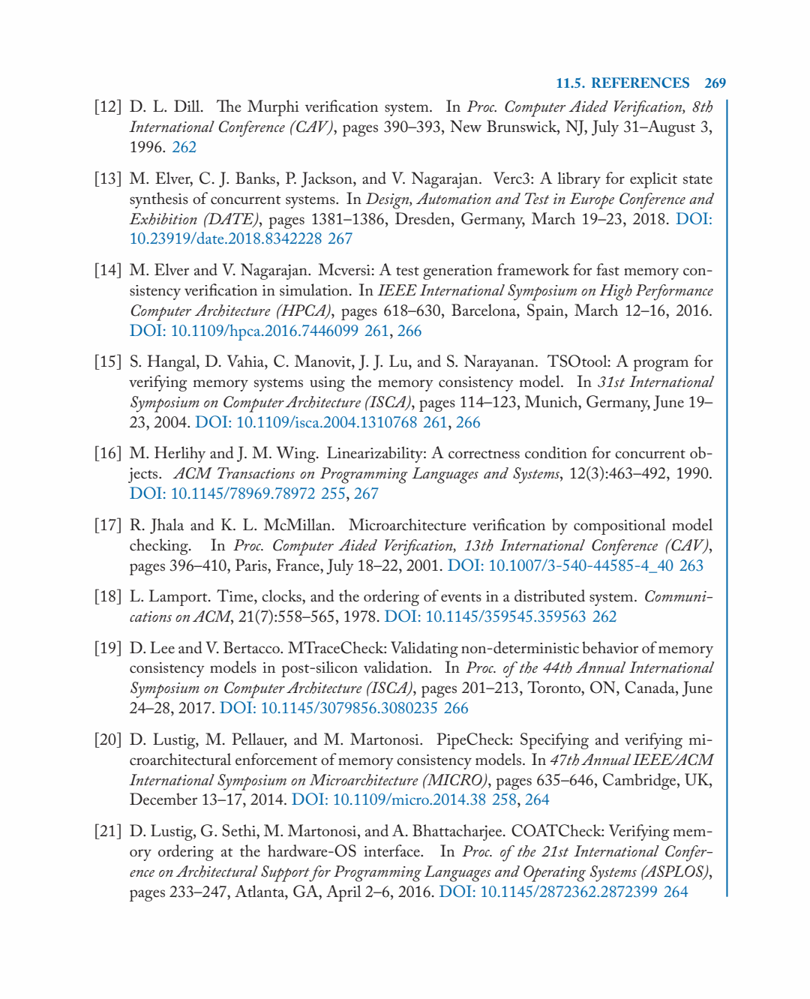
原书第 270 页PDF 292
ENGLISH[22] Y. A. Manerkar, D. Lustig, M. Martonosi, and A. Gupta. PipeProof: Automated memory consistency proofs for microarchitectural specifications. In 51st Annual IEEE/ACM International Symposium on Microarchitecture (MICRO), pages 788–801, Fukuoka, Japan, October 20–24, 2018. DOI: 10.1109/micro.2018.00069 265
中文[22] Y. A. Manerkar, D. Lustig, M. Martonosi, and A. Gupta. PipeProof：面向微体系结构规约的自动化内存一致性证明. In 51st Annual IEEE/ACM International Symposium on Microarchitecture (MICRO), pages 788–801, Fukuoka, Japan, October 20–24, 2018. DOI: 10.1109/micro.2018.00069 265
ENGLISH[23] Y. A. Manerkar, D. Lustig, M. Martonosi, and M. Pellauer. RTLCheck: Verifying the memory consistency of RTL designs. In Proc. of the 50th Annual IEEE/ACM International Symposium on Microarchitecture (MICRO), pages 463–476, Cambridge, MA, October 14– 18, 2017. DOI: 10.1145/3123939.3124536 267
中文[23] Y. A. Manerkar, D. Lustig, M. Martonosi, and M. Pellauer. RTLCheck：验证RTL设计的内存一致性. In Proc. of the 50th Annual IEEE/ACM International Symposium on Microarchitecture (MICRO), pages 463–476, Cambridge, MA, October 14–18, 2017. DOI: 10.1145/3123939.3124536 267
ENGLISH[24] Y. A. Manerkar, D. Lustig, M. Pellauer, and M. Martonosi. CCICheck: Using (cid:22)hb graphs to verify the coherence-consistency interface. In Proc. of the 48th International Symposium on Microarchitecture (MICRO), pages 26–37, Waikiki, HI, December 5–9, 2015. DOI: 10.1145/2830772.2830782 259, 264

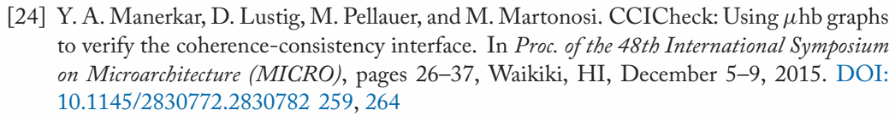
数学符号与上下标以此原版面为准中文[24] Y. A. Manerkar, D. Lustig, M. Pellauer, and M. Martonosi. CCICheck：利用μhb图验证缓存一致性与内存一致性之间的接口. In Proc. of the 48th International Symposium on Microarchitecture (MICRO), pages 26–37, Waikiki, HI, December 5–9, 2015. DOI: 10.1145/2830772.2830782 259, 264
ENGLISH[25] A. Meixner and D. J. Sorin. Dynamic verification of sequential consistency. In 32st International Symposium on Computer Architecture (ISCA), pages 26–37, Madison, WI, June 4–8, 2005. DOI: 10.1109/isca.2005.25 266
中文[25] A. Meixner and D. J. Sorin. 顺序一致性的动态验证. In 32st International Symposium on Computer Architecture (ISCA), pages 26–37, Madison, WI, June 4–8, 2005. DOI: 10.1109/isca.2005.25 266
ENGLISH[26] A. Meixner and D. J. Sorin. Dynamic verification of memory consistency in cachecoherent multithreaded computer architectures. In Proc. International Conference on Dependable Systems and Networks (DSN), pages 73–82, Philadelphia, PA, June 25–28, 2006. DOI: 10.1109/dsn.2006.29 262
中文[26] A. Meixner and D. J. Sorin. 缓存一致的多线程计算机体系结构中的内存一致性动态验证. In Proc. International Conference on Dependable Systems and Networks (DSN), pages 73–82, Philadelphia, PA, June 25–28, 2006. DOI: 10.1109/dsn.2006.29 262
ENGLISH[27] R. Milner. An algebraic definition of simulation between programs. In Proc. of the 2nd International Joint Conference on Artificial Intelligence, pages 481–489, London, UK, September 1–3, 1971. 263
中文[27] R. Milner. 程序间模拟关系的代数定义. In Proc. of the 2nd International Joint Conference on Artificial Intelligence, pages 481–489, London, UK, September 1–3, 1971. 263
ENGLISH[28] N. Oswald, V. Nagarajan, and D. J. Sorin. ProtoGen: Automatically generating directory cache coherence protocols from atomic specifications. In 45th ACM/IEEE Annual International Symposium on Computer Architecture (ISCA), pages 247–260, Los Angeles, CA, June 1–6, 2018. DOI: 10.1109/isca.2018.00030 267
中文[28] N. Oswald, V. Nagarajan, and D. J. Sorin. ProtoGen：从原子规约自动生成目录式缓存一致性协议. In 45th ACM/IEEE Annual International Symposium on Computer Architecture (ISCA), pages 247–260, Los Angeles, CA, June 1–6, 2018. DOI: 10.1109/isca.2018.00030 267
ENGLISH[29] S. Park and D. L. Dill. Verification of FLASH cache coherence protocol by aggregation of distributed transactions. In SPAA, pages 288–296, 1996. DOI: 10.1145/237502.237573 267
中文[29] S. Park and D. L. Dill. 通过聚合分布式事务验证FLASH缓存一致性协议. In SPAA, pages 288–296, 1996. DOI: 10.1145/237502.237573 267
ENGLISH[30] M. Plakal, D. J. Sorin, A. Condon, and M. D. Hill. Lamport clocks: Verifying a directory cache-coherence protocol. In SPAA, pages 67–76, 1998. DOI: 10.1145/277651.277672 262
中文[30] M. Plakal, D. J. Sorin, A. Condon, and M. D. Hill. Lamport时钟：验证目录式缓存一致性协议. In SPAA, pages 67–76, 1998. DOI: 10.1145/277651.277672 262
ENGLISH[31] A. Pnueli. The temporal logic of programs. In 18th Annual Symposium on Foundations of Computer Science, pages 46–57, Providence, Rhode Island, October 31–November 1, 1977. DOI: 10.1109/sfcs.1977.32 252
中文[31] A. Pnueli. 程序的时序逻辑. In 18th Annual Symposium on Foundations of Computer Science, pages 46–57, Providence, Rhode Island, October 31–November 1, 1977. DOI: 10.1109/sfcs.1977.32 252
查看 原书第 270 页 的完整原版面（PDF 292）
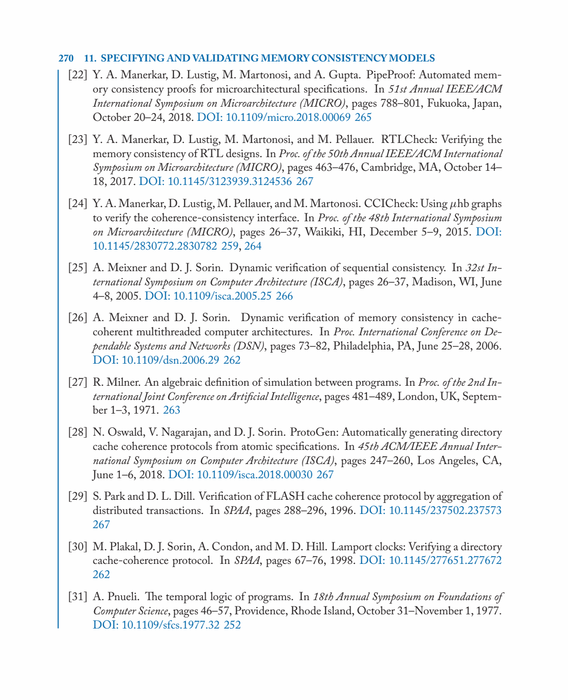
原书第 271 页PDF 293
ENGLISH[32] F. Pong and M. Dubois. Verification techniques for cache coherence protocols. ACM Computing Surveys, 29(1):82–126, 1997. DOI: 10.1145/248621.248624 267
中文[32] F. Pong and M. Dubois. 缓存一致性协议的验证技术. ACM Computing Surveys, 29(1):82–126, 1997. DOI: 10.1145/248621.248624 267
ENGLISH[33] S. Qadeer. Verifying sequential consistency on shared-memory multiprocessors by model checking. IEEE Transactions on Parallel Distributions on Systems, 14(8):730–741, 2003. DOI: 10.1109/tpds.2003.1225053 267
中文[33] S. Qadeer. 通过模型检查验证共享内存多处理器的顺序一致性. IEEE Transactions on Parallel Distributions on Systems, 14(8):730–741, 2003. DOI: 10.1109/tpds.2003.1225053 267
ENGLISH[34] D. E. Shasha and M. Snir. Efficient and correct execution of parallel programs that share memory. ACM Transactions on Programming Languages and Systems, 10(2):282–312, 1988. DOI: 10.1145/42190.42277 267
中文[34] D. E. Shasha and M. Snir. 共享内存并行程序的高效、正确执行. ACM Transactions on Programming Languages and Systems, 10(2):282–312, 1988. DOI: 10.1145/42190.42277 267
ENGLISH[35] C. Trippel, Y. A. Manerkar, D. Lustig, M. Pellauer, and M. Martonosi. TriCheck: Memory model verification at the trisection of software, hardware, and ISA. In Proc. of the 22nd International Conference on Architectural Support for Programming Languages and Operating Systems (ASPLOS), pages 119–133, Xi’an, China, April 8–12, 2017. DOI: 10.1145/3037697.3037719 267
中文[35] C. Trippel, Y. A. Manerkar, D. Lustig, M. Pellauer, and M. Martonosi. TriCheck：在软件、硬件与ISA三者交汇处验证内存模型. In Proc. of the 22nd International Conference on Architectural Support for Programming Languages and Operating Systems (ASPLOS), pages 119–133, Xi’an, China, April 8–12, 2017. DOI: 10.1145/3037697.3037719 267
ENGLISH[36] A. Udupa, A. Raghavan, J. V. Deshmukh, S. Mador-Haim, M. M. K. Martin, and R. Alur. TRANSIT: Specifying protocols with concolic snippets. In ACM SIGPLAN Conference on Programming Language Design and Implementation (PLDI), pages 287–296, Seattle, WA, June 16–19, 2013. DOI: 10.1145/2491956.2462174 267
中文[36] A. Udupa, A. Raghavan, J. V. Deshmukh, S. Mador-Haim, M. M. K. Martin, and R. Alur. TRANSIT：利用具体—符号混合执行片段描述协议规约. In ACM SIGPLAN Conference on Programming Language Design and Implementation (PLDI), pages 287–296, Seattle, WA, June 16–19, 2013. DOI: 10.1145/2491956.2462174 267
ENGLISH[37] M. Zhang, J. D. Bingham, J. Erickson, and D. J. Sorin. PVCoherence: Designing flat coherence protocols for scalable verification. In 20th IEEE International Symposium on High Performance Computer Architecture (HPCA), pages 392–403, Orlando, FL, February 15–19, 2014. DOI: 10.1109/mm.2015.48 267
中文[37] M. Zhang, J. D. Bingham, J. Erickson, and D. J. Sorin. PVCoherence：面向可扩展验证设计扁平缓存一致性协议. In 20th IEEE International Symposium on High Performance Computer Architecture (HPCA), pages 392–403, Orlando, FL, February 15–19, 2014. DOI: 10.1109/mm.2015.48 267
ENGLISH[38] M. Zhang, A. R. Lebeck, and D. J. Sorin. Fractal coherence: Scalably verifiable cache coherence. In 43rd Annual IEEE/ACM International Symposium on Microarchitecture (MI- CRO), pages 471–482, Atlanta, GA, December 4–8, 2010. DOI: 10.1109/micro.2010.11 267
中文[38] M. Zhang, A. R. Lebeck, and D. J. Sorin. 分形缓存一致性：可扩展验证的缓存一致性. In 43rd Annual IEEE/ACM International Symposium on Microarchitecture (MICRO), pages 471–482, Atlanta, GA, December 4–8, 2010. DOI: 10.1109/micro.2010.11 267
查看 原书第 271 页 的完整原版面（PDF 293）
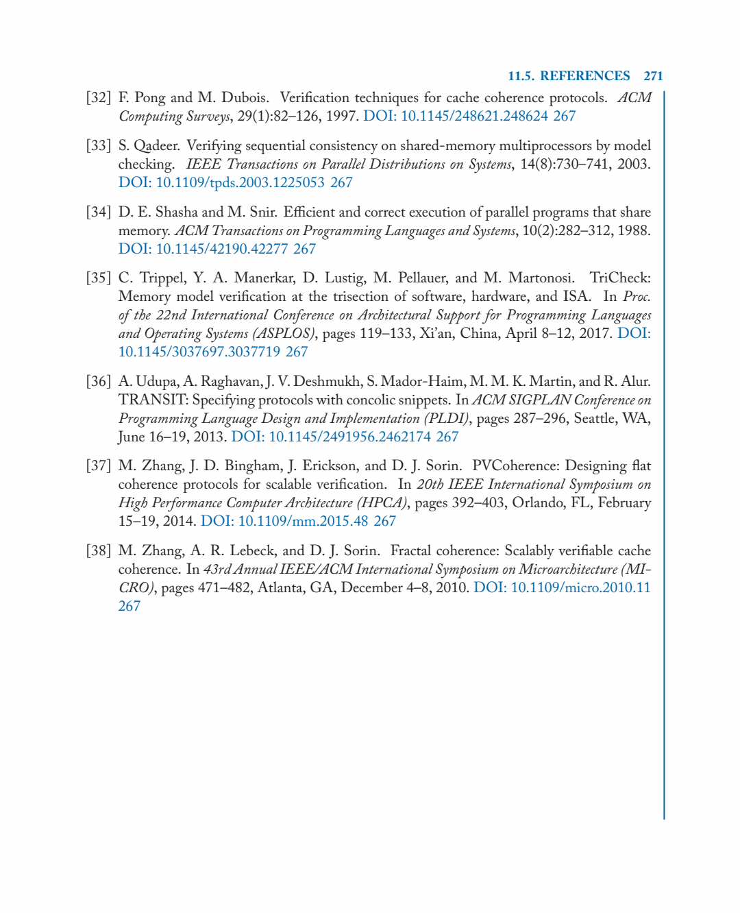